-name=Egon department.id(long)=2345 schedule.date(date)=2020/02/27
Spring-Batch Deep-Dive
Lektion 1 - Einführung
Warum Spring-Batch?
Herkunft
Was ist Batchverarbeitung?
Historisch: Stapelverarbeitung (Lochkarten)
Windows: .BAT Dateien
Großer Stil: Operator verwaltet Jobs im Rechenzentrum
Batchverarbeitung vs. Dialogverarbeitung vs. Messaging
Merkmale
Wodurch zeichnen sich Batchprogramme aus?
Batchprogramme …
laufen ohne Benutzerinteraktion
verarbeiten eine vorgegebene Datenmenge
enden nachdem alle Daten verarbeitet wurden
eigenen sich nur, wenn Verzögerung akzeptabel ist
Wozu?
Batch-Verarbeitung ist doch ganz einfach,
wozu braucht man dafür ein Framework?
Anforderungen
Batch-Programme …
müssen große Datenmengen verarbeiten können
müssen ausreichende Performance liefern
müssen mit Fehlern klarkommen
defekte Eingangsdaten
(temporäre) Ausfälle
müssen Wiederanlauf unterstützen
müssen überwacht werden können
Anwendungsbereiche
Ein Fall für Spring-Batch?
Kontoauszüge am Monatsende erstellen und verschicken
Eingehende Dokumente vom Scandienstleister an ein Workflowsystem übergeben
Eine Web-Anwendung soll immer den aktuellsten Standortkatalog (XML-Datei) importieren
Generierung eines umfangreichen PDF-Dokuments über Web-Oberfläche
Einmalige Datenmigration aus einer Altanwendung
Einlesen einer großen XML- oder CSV-Datei
Regelmäßig den Cache für Konfigurationsdaten löschen, damit Änderungen aus der Datenbank gezogen werden
Historie
2007: Code-Beitrag von Accenture
2008: Spring-Batch-1.0.0.FINAL (Java 4)
2009: 2.0.0.RELEASE (Java 5, Generics, Flows, Remote Chunking, Partitioning)
2014: 3.0.0.RELEASE (JSR-352, Spring 4, Java 8)
2017: 4.0.0.RELEASE (Spring 5, benötigt Java 8, Builder für Reader/Writer)
aktuell: 4.3.6 (Records, JpaCursorItemReader, Json, Bean Validation, Micrometer, Kafka, Avro, Vereinfachungen, Doku, sichere JSON-Deserialisierung)
2023: 5.0.0 (Spring 6, benötigt Java 17, Defaultmethoden statt Supportklassen, transactionManager Bean Problem gelöst #3981)
Typische Lernkurve bei Spring-Batch

Ziel dieser Schulung…

Architektur (JARs)

Typischer Ablauf eines Batch-Jobs
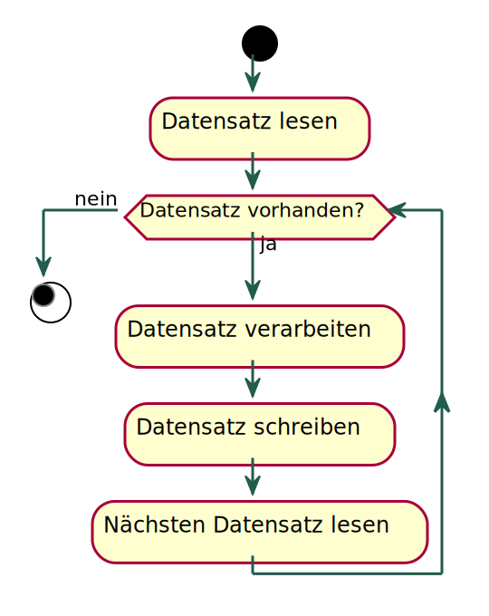
Zusammenfassung Lektion 1
Batchprogramme laufen ohne Benutzerinteraktion und enden wenn alles verarbeitet ist.
Batchprogramme müssen performant und fehlertolerant sein, Wiederanlauf unterstützen und überwacht werden können.
Anwendungsbeispiele…
Historie
Architektur von Spring-Batch
Ein typischer Batchablauf
→ Agenda
Lektion 2 - Hello World mit Spring-Batch
Überblick zu dieser Lektion
Bestandteile eines Spring-Batch Jobs
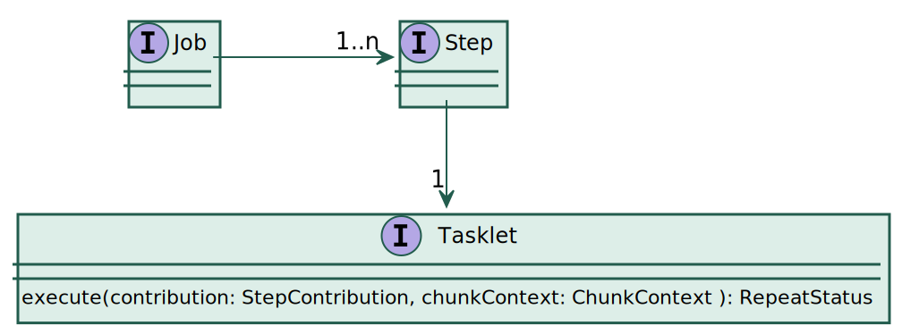
Implementierung Hello World-Tasklet
public class HelloTasklet implements Tasklet {
@Override
public RepeatStatus execute(StepContribution contribution, ChunkContext chunkContext) {
System.out.println("Hello World!");
return RepeatStatus.FINISHED;
}
}Der Rückgabewert RepeatStatus.FINISHED bewirkt, dass der Step nach der 1. Ausführung beendet wird.
Grundgerüst einer Job-Konfiguration
@Configuration
@EnableBatchProcessing
public class HelloConfig {
@Autowired
private JobBuilderFactory jobBuilderFactory;
@Autowired
private StepBuilderFactory stepBuilderFactory;
// ...
}Die Annotation EnableBatchProcessing (→ Source) bewirkt, dass alle relevanten Beans für Spring-Batch
angelegt werden.
Konfiguration des Hello-Jobs
@Bean
HelloTasklet helloTasklet() {
return new HelloTasklet();
}
@Bean
Step helloStep() {
return stepBuilderFactory.get("helloStep").tasklet(helloTasklet()).build();
}
@Bean
Job helloJob() {
return jobBuilderFactory.get("helloJob").start(helloStep()).build();
}Jobs und Steps sollte man immer mit den zugehörigen Builder-Factories erzeugen.
Spring Initializr
Bootstraping von Spring-Boot Applikation
Web-UI: https://start.spring.io/
In Java-IDEs integriert
Bietet Oberfläche zur Auswahl von
Sprache (Java, Kotlin)
Build-System (Maven, Gradle)
Versionen
Abhängigkeiten
Erzeugt lauffähiges Grundgerüst einer Applikation
Spring-Batch-Anwendung mit Spring Initializr
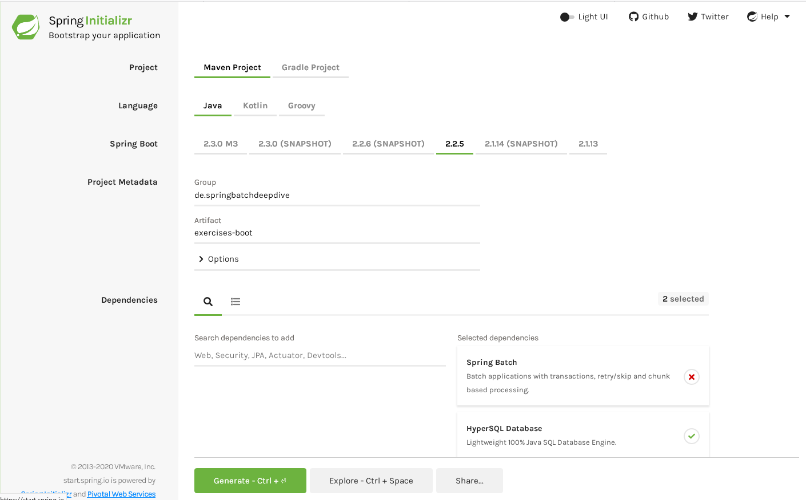
Optionen für Hello World Anwendung
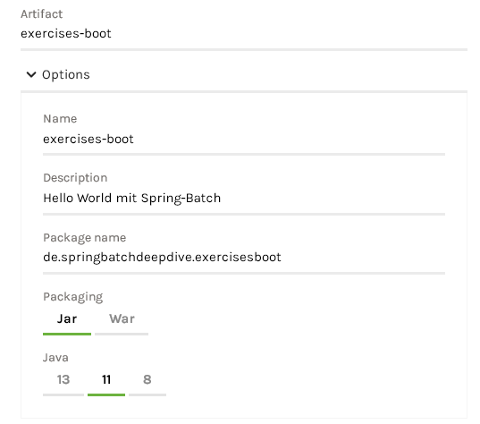
Build mit Maven

Aufgabe 1: Spring-Batch-Anwendung mit Spring-Initilizr
Erstellen Sie eine Spring-Boot Anwendung mit Spring-Initilizr mit folgenden Einstellungen:
Maven
Java 17
Abhängigkeiten: Spring Batch, HyperSQL Database
Fügen Sie eine
HelloConfigmit einem Hello World Job hinzuFühren Sie die Anwendung aus
Was fällt Ihnen bei den Logausgaben auf, wenn Sie die Anwendung mit "debug=true" ausführen?
Setzen Sie einen Breakpoint in der
executeMethode. Welche Abschnitte des Stacktrace gehören zu Spring-Batch?Welche Beans im ApplicationContext gehören zu Spring-Batch? Wie könnten Sie das herausfinden?
Tasklet-Stacktrace: TransactionTemplate
execute:17, HelloTasklet (de.springbatchdeepdive.lesson02.hello)
doInTransaction:407, TaskletStep$ChunkTransactionCallback (org.springframework.batch.core.step.tasklet)
doInTransaction:331, TaskletStep$ChunkTransactionCallback (org.springframework.batch.core.step.tasklet)
execute:140, TransactionTemplate (org.springframework.transaction.support)
doInChunkContext:273, TaskletStep$2 (org.springframework.batch.core.step.tasklet)
...Jeder Aufruf von Tasklet.execute wird in einer eigenen Transaktion ausgeführt.
Tasklet-Stacktrace: RepeatTemplate
...
doInChunkContext:273, TaskletStep$2 (org.springframework.batch.core.step.tasklet)
doInIteration:82, StepContextRepeatCallback (org.springframework.batch.core.scope.context)
getNextResult:375, RepeatTemplate (org.springframework.batch.repeat.support)
executeInternal:215, RepeatTemplate (org.springframework.batch.repeat.support)
iterate:145, RepeatTemplate (org.springframework.batch.repeat.support)
doExecute:258, TaskletStep (org.springframework.batch.core.step.tasklet)
...Das RepeatTemplate ersetzt eine Schleife zur Wiederholung des Tasklet.
RepeatTemplate — Ein Framework für eine Schleife
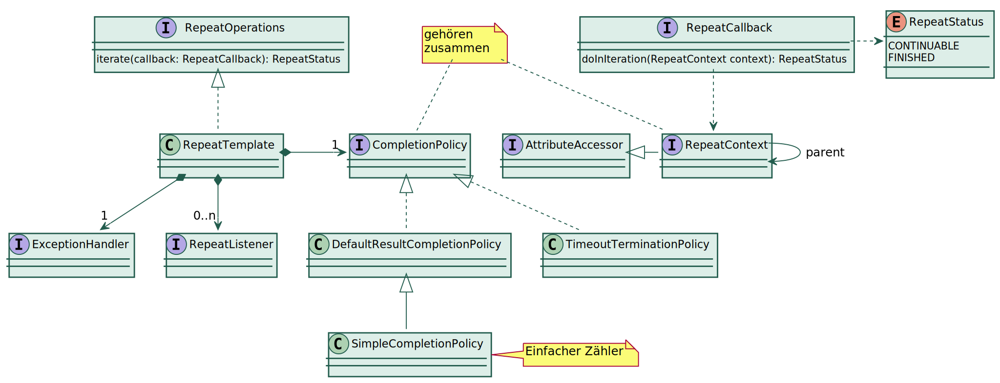
Verwendung des RepeatTemplate beim TaskletStep
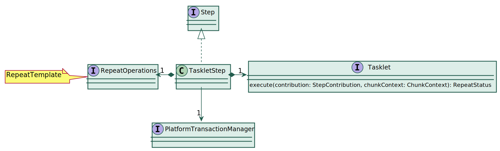
Tasklet ausführen

Tasklet-Stacktrace: SimpleJobLauncher
...
doExecute:258, TaskletStep (org.springframework.batch.core.step.tasklet)
execute:208, AbstractStep (org.springframework.batch.core.step)
handleStep:152, SimpleStepHandler (org.springframework.batch.core.job)
handleStep:413, AbstractJob (org.springframework.batch.core.job)
doExecute:136, SimpleJob (org.springframework.batch.core.job)
execute:320, AbstractJob (org.springframework.batch.core.job)
run:149, SimpleJobLauncher$1 (org.springframework.batch.core.launch.support)
...Der SimpleJobLauncher führt den Batch-Job aus.
Tasklet-Stacktrace: SimpleJobLauncher ist als LazyProxy verpackt
...
run:149, SimpleJobLauncher$1 (org.springframework.batch.core.launch.support)
execute:50, SyncTaskExecutor (org.springframework.core.task)
run:140, SimpleJobLauncher (org.springframework.batch.core.launch.support)
invoke0:-1, NativeMethodAccessorImpl (jdk.internal.reflect)
invoke:77, NativeMethodAccessorImpl (jdk.internal.reflect)
invoke:43, DelegatingMethodAccessorImpl (jdk.internal.reflect)
invoke:568, Method (java.lang.reflect)
invokeJoinpointUsingReflection:344, AopUtils (org.springframework.aop.support)
invokeJoinpoint:198, ReflectiveMethodInvocation (org.springframework.aop.framework)
proceed:163, ReflectiveMethodInvocation (org.springframework.aop.framework)
invoke:128, SimpleBatchConfiguration$PassthruAdvice (org.springframework.batch.core.configuration.annotation)
proceed:186, ReflectiveMethodInvocation (org.springframework.aop.framework)
invoke:215, JdkDynamicAopProxy (org.springframework.aop.framework)
run:-1, $Proxy50 (jdk.proxy2)
...Die SimpleBatchConfiguration (→ Source) verpackt Spring-Batch Beans als lazy Proxy.
Das löst Probleme bei der Initialisierungsreihenfolge.
Name der Beans (z. B. transactionManager) ist in SimpleBatchConfiguration hart verdrahtet! |
Tasklet-Stacktrace: JobLauncherApplicationRunner
...
run:-1, $Proxy50 (jdk.proxy2)
execute:199, JobLauncherApplicationRunner (org.springframework.boot.autoconfigure.batch)
executeLocalJobs:173, JobLauncherApplicationRunner (org.springframework.boot.autoconfigure.batch)
launchJobFromProperties:160, JobLauncherApplicationRunner (org.springframework.boot.autoconfigure.batch)
run:155, JobLauncherApplicationRunner (org.springframework.boot.autoconfigure.batch)
run:150, JobLauncherApplicationRunner (org.springframework.boot.autoconfigure.batch)
callRunner:782, SpringApplication (org.springframework.boot)
callRunners:772, SpringApplication (org.springframework.boot)
run:345, SpringApplication (org.springframework.boot)
run:1343, SpringApplication (org.springframework.boot)
run:1332, SpringApplication (org.springframework.boot)
main:10, HelloBootApplication (de.springbatchdeepdive.lesson02.hello)Standardmäßig führt Spring-Boot alle Jobs mit dem
JobLauncherApplicationRunnerbeim Start der Anwendung aus.Dies kann man über die application.properties mit
spring.batch.job.enabled=falseunterbinden oder man kann überspring.batch.job.namesexplizit angeben, welche Jobs ausgeführt werden sollen (siehe →BatchProperties).
Relevante Singleton-Beans aus dem ApplicationContext
| Bean-Name | Bean-Klasse |
|---|---|
jobRepository | org.springframework.batch.core.repository.JobRepository |
jobLauncher | org.springframework.batch.core.launch.JobLauncher |
jobRegistry | org.springframework.batch.core.configuration.JobRegistry |
jobExplorer | org.springframework.batch.core.explore.JobExplorer |
jobOperator | org.springframework.batch.core.launch.support.SimpleJobOperatorEnhancerBySpringCGLIB8c1a6d16 |
transactionManager | org.springframework.transaction.PlatformTransactionManager |
jdbcTemplate | org.springframework.jdbc.core.JdbcTemplate |
dataSource | com.zaxxer.hikari.HikariDataSource |
jobBuilders | org.springframework.batch.core.configuration.annotation.JobBuilderFactory |
stepBuilders | org.springframework.batch.core.configuration.annotation.StepBuilderFactory |
helloJob | org.springframework.batch.core.job.SimpleJob |
helloStep | org.springframework.batch.core.step.tasklet.TaskletStep |
helloTasklet | de.springbatchdeepdive.lesson02.hello.HelloConfig$1 |
CommandLineJobRunner
Batch-Jobs ohne Spring-Boot ausführen
CommandLineJobRunner — Überblick
Der
CommandLineJobRunnerist eine Klasse mit einermainMethode.Man kann damit einen einzelnen Job ausführen oder die Ausführung von Jobs steuern.
Alternativ kann man auch eine Spring-Boot Anwendung mit Job-Parameter aufrufen.
CommandLineJobRunner — Verwendung
java -cp ..
org.springframework.batch.core.launch.support.CommandLineJobRunner
jobPath <options> jobIdentifier (jobParameters)*Der jobPath ist entweder eine XML-ApplicationContext-Datei oder der voll qualifizierte Klassenname einer Configuration-Klasse.
Der jobIdentifier ist der Name, der Job-Bean.
Alternativ können auch Execution-Id oder Name aus dem JobRepository angegeben werden.Job-Parameter müssen in der Form
name=wertangegeben werden.Die Optionen -restart, -stop, -abandon und -next spielen nur im Zusammenhang mit dem JobRepository eine Rolle.
Für Details siehe → CommandLineJobRunner Javadocs
Aufgabe 2: Spring-Batch-Anwendung ohne Spring-Boot ausführen
Kopieren Sie Ihre
HelloConfigin das vorbereiteteexercises-plainProjekt.Passen Sie ggf. das exec-Target in der pom.xml an.
Führen Sie die Anwendung über Maven aus.
Alternativ: Erstellen Sie sich eine entsprechende Launch-Konfiguration in Ihrer IDE.
Erstellen Sie einen 2. Job zum Verabschieden und führen Sie diesen aus.
Welche Beans sind jetzt im ApplicationContext?
Was hat sich am Stacktrace geändert?
Job-Parameter
In der Regel benötigen Jobs Parameter
Möglichkeit 1: System-Properties
Aufruf über -Dname=Egon
Verwendung über
Environment:@Value("${name:World}") private String name;
Möglichkeit 2: Job-Parameter
Job-Parameter — Klasse JobParameters
Der Zugriff auf Job-Paramter erfolgt über die Klasse JobParameters:

CommandLineJobRunner — Parameterübergabe
Der
CommandLineJobRunnerverwendet denDefaultJobParametersConverter.Datums- und Zahlenformat kann über entsprechende Formatter angepasst werden (erfordert eigene
JobParametersConverterBean).Parameter werden in der Form
key(<type>)=valueangegebenAls
typesind string (default), date oder long zulässigEin vorangestelltes - kennzeichnet den Parameter als nicht identifizierend.
Beispiele:
Für Details siehe → DefaultJobParametersConverter Javadocs
| Eine Job-Ausführung ist eindeutig durch den Jobnamen und die identifizierenden Parameter bestimmt. |
Parameterzugriff über Listener
Problem: Wie kommt man an das Parameters Objekt ran?
Lösung 1: JobExecutionListener
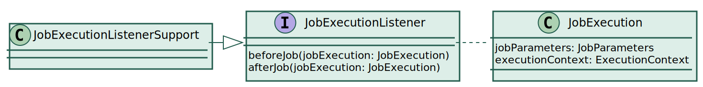
Die
JobExecutionenthält Metdaten zur Jobausführung, u. a. die ParameterEine Klasse (z. B. ein
Tasklet) kann dasJobExecutionListenerInterface implementieren,
um vor oder nach der Jobausführung auf diese Metadaten zuzugreifen.JobExecutionListenerSupportbietet default-Methoden für denJobExecutionListener
| Listener sind bei Spring-Batch generell nützlich zum Zugriff auf Metadaten oder zur Datenübergabe. |
Lösung 1: JobExecutionListener registrieren
Damit ein JobExecutionListener aufgerufen wird, muss er beim Job registriert werden.
Dafür bietet die JobBuilderFactory die listener-Methode:
return jobBuilderFactory.get("helloJob")
.start(helloStep)
.listener(helloTasklet) // Tasklet als JobExecutionListener registrieren
.build();Lösung 2: Tasklet-Parameter
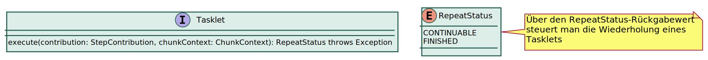
An die JobParameters gelangt man auch über:contribution.getStepExecution().getJobParameters() oder überchunkContext.getStepContext().getJobParameters() |
Aufgabe 3: Job mit Parameter
Erweiteren Sie den Hello World Job so, dass er die Parameter
nameundcountakzeptiert.nameist eine Zeichenkette (default: World)countist eine Ganzzahl (default: 1)
Der Job soll count mal Hello <name>! ausgeben.
Sie benötigen für das Tasklet eine eigne Klasse HelloTasklet, damit diese
die beiden Interfaces Tasklet und JobExecutionListener implementieren kann. |
Lösung 3: Job-Parameter über Expression-Language
Man kann auch über Expression-Language Ausdrücke auf die Job-Parameter zugreifen:
@Value("#{jobParameters['name']?:'World'}")
private String name;
@Value("#{jobParameters['count']?:1}")
private int count;- Problem:
Der ApplicationContext (und somit auch die Singleton-Beans) wird initialisiert
bevor die Parameter ausgewertet werden.- Lösung:
Erzeugung der Bean muss verzögert werden
@JobScopeverknüpft den Lebenszyklus einer Bean mit dem Lebenszyklus eines Jobs
Mittels @JobScope und @StepScope kann man per Expression Language auf Zwischenergebnisse
zugreifen, die erst während der Jobausführung entstehen. |
JobContext
Der JobContext dient dazu, Ausdrücke von Beans mit @JobScope auszuwerten.

Das ermöglicht Expression-Language Ausdrücke der Form:
@Value("#{jobName}")
@Value("#{jobParameters[name]}")
@Value("#{jobExecutionContext['input.file.name']}")
@Value("#{systemProperties}['java.home']")Analoges gilt für @StepScope und StepContext. |
| Wenn der Key ein '.' enthält, muss er in 'Anführungszeichen' gesetzt werden. |
Aufgabe 4: Expression-Language
Nutzen Sie Expression-Language-Ausdrücke statt einem
JobExecutionListener, um auf die Parameternameundcountzuzugreifen.
Testing
Batch-Jobs als Unit-Test ausführen
Hello World Job als Unit-Test
HelloJobTest.java
@SpringJUnitConfig(HelloConfigParamsScope.class)
public class HelloJobTest {
@Autowired
private JobLauncher jobLauncher;
@Autowired
private Job helloJob;
@Test
void testHello() throws JobParametersInvalidException, JobExecutionAlreadyRunningException,
JobRestartException, JobInstanceAlreadyCompleteException {
// run the job
JobParameters params = new JobParametersBuilder()
.addString("name", "Germany")
.addLong("count", 2L)
.toJobParameters();
JobExecution execution = jobLauncher.run(helloJob, params);
// make sure job finished successfully
assertThat(execution.getAllFailureExceptions()).isEmpty();
assertThat(execution.getExitStatus()).isEqualTo(ExitStatus.COMPLETED);
}
}| Genau so würde man einen Job innerhalb einer Applikation ausführen. |
Manuelle Job-Konfiguration
Es geht auch ganz ohne ApplicationContext…
HelloJobManualTest.java
@Test
public void testManualJobConfig() throws Exception {
// prepare infrastructure
MapJobRepositoryFactoryBean jobRepositoryFactoryBean = new MapJobRepositoryFactoryBean(); // deprecated
JobRepository jobRepository = jobRepositoryFactoryBean.getObject();
PlatformTransactionManager transactionManager = new ResourcelessTransactionManager();
jobBuilderFactory = new JobBuilderFactory(jobRepository);
stepBuilderFactory = new StepBuilderFactory(jobRepository, transactionManager);
// create the job
Job job = helloJob();
// create a launcher
SimpleJobLauncher launcher = new SimpleJobLauncher();
launcher.setJobRepository(jobRepository);
launcher.afterPropertiesSet();
// launch the job
JobParameters params = new JobParameters();
JobExecution execution = launcher.run(job, params);
// make sure job finished successfully
assertThat(execution.getAllFailureExceptions()).isEmpty();
assertThat(execution.getExitStatus()).isEqualTo(ExitStatus.COMPLETED);
}Variante: Job und Step-Scoped Beans: Execution Listener
@ExtendWith(SpringExtension.class)
@EnableBatchProcessing
@SpringBatchTest
public class FlatFileItemReaderTests {
@Autowired
private FlatFileItemReader<CustomerUpdate> customerUpdateItemReader;
public StepExecution getStepExecution() {
JobParameters jobParameters = new JobParametersBuilder()
.addString("p1", "v1")
.toJobParameters();
return MetaDataInstanceFactory.createStepExecution(jobParameters);
}
@Test
public void testSth() { /* ..*/ }
}Spring batch bietet:
StepScopeTestExecutionListener,JobScopeTestExecutionListener@SpringBatchTesterzeugt Beans:JobLauncherTestUtils,JobRepositoryTestUtils,StepScopeTestExecutionListener,JobScopeTextExecutionListener
Zusammenfassung Lektion 2
Batch-Anwendung mit Spring-Initializr
Job mit CommandLineRunner verwenden
Parameterübergabe
JobExecutionListener
@JobScope
Ausführung als JUnit-Test
→ Agenda
Lektion 3 - Das Spring-Batch Repository
Überblick zu dieser Lektion
Wozu ein JobRepository?
Protokollierung
Wiederanlauf
Überwachung
Steuerung
Falls diese Punkte keine Rolle spielen…
MapJobRepository(deprecated!) kann als Platzhalter verwendet werden
Aufbau eines Batch-Jobs (Konzeptmodell)
Laufzeit-Datenmodell

Datenbank-Schema
| Alle Tabellennamen haben standardmäßig den Präfix BATCH_. Dieser ist konfigurierbar. |
HSQLDB
HSQLDB in Stichworten
Freie, vollständig in Java programmierte relationale SQL-Datenbank
Bestandteil von OpenOffice und LibreOffice
Sehr schlank (nur ein JAR)
Als In-Memory-Datenbank verwendbar (nützlich für Tests)
HSQLDB — Verwendung In-Process
Notwendige Abhängigkeit:
<dependency>
<groupId>org.hsqldb</groupId>
<artifactId>hsqldb</artifactId>
<scope>runtime</scope>
</dependency>| JDBC-URL (Beispiel) | Verwendungszweck |
|---|---|
jdbc:hsqldb:mem:mymemdb | In-Memory Datenbank |
jdbc:hsqldb:file:mydir/standalonedb | Standanlone Datenbank |
jdbc:hsqldb:hsql://localhost/xdb | Datenbank-Server |
HSQLDB — Verwendung als Server
- Aufruf:
java -cp hsqldb-2.5.0.jar org.hsqldb.server.Server --database.0 file:mydb --dbname.0 xdb --silent false- Aufruf über das Maven-Projekt hsqldb-server:
mvnbzw. in einem neuen Konsolen-Fenster:
start mvn- JDBC-URL:
jdbc:hsqldb:hsql://localhost/xdb
HSQLDB — Datenbank Management Tool
- Aufruf:
java -cp hsqldb-2.5.0.jar org.hsqldb.util.DatabaseManagerSwing- Aufruf über das Maven-Projekt hsqldb-server:
mvn exec:java@ui- Initialer Login:
Username
"SA"
Passwort
""
- Mögliche Alternativen:
Datenbank Management Tool der jeweiligen IDE
HSQLDB — Konfiguration einer Spring-Datasource
Abhängigkeit für Connection-Pool:
<dependency>
<groupId>com.zaxxer</groupId>
<artifactId>HikariCP</artifactId>
</dependency>Altenativ der DBCP2 Connection Pool:
<dependency>
<groupId>org.apache.commons</groupId>
<artifactId>commons-dbcp2</artifactId>
</dependency>Deklaration der DataSource:
@Configuration
public class DataSourceConfig {
@Bean
HikariDataSource dataSource() {
HikariConfig config = new HikariConfig();
config.setJdbcUrl("jdbc:hsqldb:hsql://localhost/xdb");
config.setUsername("SA");
config.setPassword("");
HikariDataSource ds = new HikariDataSource(config);
return ds;
}
}Für Spring-Boot genügen folgende Einträge in der application.properties:
spring.datasource.url=jdbc:hsqldb:hsql://localhost/xdb
spring.datasource.username=SA
spring.datasource.password=
spring.batch.jdbc.initialize-schema=alwaysHSQLDB — Schema für Spring-Batch Respository anlegen
In spring-batch-core-x.y.z.RELEASE.jar findet man im Verzeichnis
/org/springframework/batch/core für diverse Datenbanksysteme
Skripte zum Anlegen des Schemas.
Für Testzwecke legt man das Schema am einfachsten über einen Unittest an:
@SpringJUnitConfig(DataSourceConfig.class)
public class SpringBatchSchemaSetup {
@Test
@Sql(scripts = "/org/springframework/batch/core/schema-hsqldb.sql",
statements = { "SET DATABASE TRANSACTION CONTROL MVCC",
"SET PROPERTY \"sql.enforce_strict_size\" TRUE" })
void initSchema() {
}
}Standardmäßig haben alle Spring-Batch Tabellen den Präfix BATCH_.
Diesen Wert kann man ändern, siehe
→ JobRepositoryFactoryBean. Dafür muss man das JobRepository selbst erzeugen, siehe
→ DefaultBatchConfigurer.createJobRepository(). |
Aufgabe 1: Hello World mit Repository
Starten Sie den HSQLDB-Server, legen Sie das Schema an und prüfen Sie, ob die Tabellen vorhanden sind.
Importieren Sie die
DataSourceConfigin die HelloWorld-Configuration und führen Sie den Job aus.Welche Einträge finden Sie nach der Ausführung in den Tabellen?
Was passiert wenn Sie den Job erneut (mit gleichen oder unterschiedlichen Parametern) ausführen?
BatchStatus vs. ExitStatus
Beide Tabellen BATCH_JOB_EXECUTION und BATCH_STEP_EXECUTION haben
die Spalten STATUS und EXIT_CODE:
Return-Code
Um Batch-Jobs auf Befehlszeile zu starten, werden oft Enterprise Scheduler verwendet.
Diese können meistens nur den Return-Code eines Shell-Skripts auswerten.
Der
CommandLineJobRunnerwandelt denExitStatuseines Jobs mit einemExitCodeMapperum.Standardmäßig wird dafür der
SimpleJvmExitCodeMapperverwendet.Um einen eigenen
ExitCodeMapperzu verwenden, genügt es eine entsprechende Bean zu definieren:@Bean ExitCodeMapper exitCodeMapper() { return exitCode -> "COMPLETED".equals(exitCode) ? 42 : -13; }Spring-Boot wertet den
ExitCodeMapperstandardmäßig nicht aus.
Der CommandLineJobRunner wird aus dem angegeben ApplicationContext per Autowiring initialsiert. |
Return-Code bei Spring-Boot
Mit dem
ExitCodeExceptionMapperkann man Exceptions einen Return-Code zuordnen.Folgender Listener wertet den
ExitCodeMapperaus:
@Component
public class ExitCodeJobExecutionEventListener
implements ApplicationListener<JobExecutionEvent>, ExitCodeGenerator, InitializingBean {
@Autowired(required = false)
private ExitCodeMapper exitCodeMapper;
private int exitCode;
@Override
public void afterPropertiesSet() {
if (exitCodeMapper == null) {
exitCodeMapper = new SimpleJvmExitCodeMapper();
}
}
@Override
public void onApplicationEvent(JobExecutionEvent event) { // alternativ: @EventListener
ExitStatus exitStatus = event.getJobExecution().getExitStatus();
exitCode = exitCodeMapper.intValue(exitStatus.getExitCode());
}
@Override
public int getExitCode() {
return exitCode;
}
}Return-Code bei Spring-Boot (System.exit)
Damit der zuvor gezeigte ExitCodeJobExecutionEventListener funktioniert muss die main Methode der
Spring-Boot Angepasst werden:
public static void main(String[] args) {
System.exit(
SpringApplication.exit(
SpringApplication.run(HelloBootApplication.class, args)));
}Zugriff auf JobRepository
Zu jedem dieser Interfaces existiert eine
SimpleJob…Implementierung, die in der Regel verwendet wird.Die
SimpleBatchConfiguration, welche via@EnableBatchProcessingeingebunden wird, legt keinenJobOperatoran.
JobExplorer
Der JobExplorer bietet eine komfortable API zum Zugriff auf das Repository.

Aufgabe 2: JobExplorer verwenden
Schreiben Sie einen Unit-Test, der über System.out alle JobExecutions und die zugehörigen Steps aus dem Repository ausgibt. Geben Sie dafür jeweils den Namen, den Startzeitpunkt, den Status und den Exit-Code aus.
Verwenden Sie folgendes Grundgerüst:
@SpringJUnitConfig(HelloRepositoryConfig.class)
public class JobExplorerSample {
@Autowired
private JobExplorer jobExplorer;
}JobParametersIncrementer — RunIdIncrementer
Der
RunIdIncrementerergänzt jeden Aufruf um einenrun.idParameterAls Wert wird eine fortlaufend hochgezählte Zahl übergeben
Dadurch kann man einen Job mit sonst gleichen identifizierenden Parametern erneut ausführen
@Bean
RunIdIncrementer incrementer() {
return new RunIdIncrementer();
}
@Bean
Job helloJob() {
Job job = jobBuilderFactory
.get("helloIncrementerJob")
.start(helloStep())
.incrementer(incrementer()) // Bei jedem Start run.id hochzählen
.preventRestart() // Erneuten Start von fehlgeschlagenen Jobs verhindern
.build();
return job;
}Verwendung mit einem JobLauncher:
JobParameters jobParameters = new JobParametersBuilder(jobExplorer)
.getNextJobParameters(helloJob) // Nächste run.id beschaffen
.toJobParameters();
JobExecution jobExecution = jobLauncher.run(helloJob, jobParameters);Zustände eines Jobs
Ein Job kann folgende Zustände (BatchStatus) annehmen:
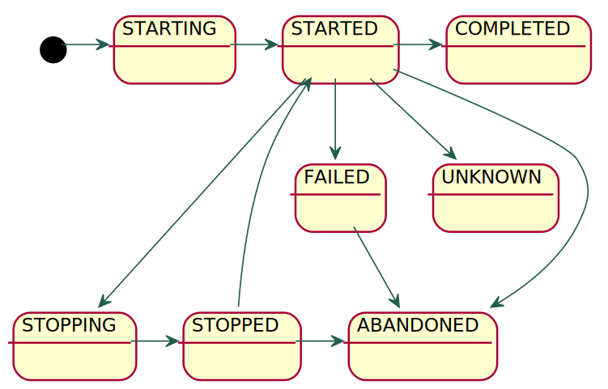
Die CommandLineJobRunner Optionen:
-restart | Die letzte fehlgeschlagene Ausführung erneut starten (mit den gleichen Parametern) oder einen gestoppten Job fortsetzen |
-stop | Den laufenden Job anhalten |
-abandon | Den Job stilllegen |
-next | Den nächsten Job entsprechend dem |
Wenn der Prozess mit kill -9 abgebrochen wurde hat er den Status STARTED. |
Aufgabe 3: Job verwalten
Führen Sie
LongRunningJobConfigmit demCommandLineJobRunneraus.Lernen Sie die Jobsteuerung kennen:
Starten Sie den Job mit unterschiedlichen Parametern für
stop.atundfail.atVerwenden Sie die Optionen -restart, -stop, -abandon (mit einem 2. Prozess)
Nutzen Sie die Lösung aus der Vorherigen Aufgabe (oder ein Datenbanktool) um sich die Auswirkungen auf das Repository anzusehen.
Was passiert mit Parametern bei -restart?
Welche Auswirkung hat ein
preventRestart()bei der Job-Konfiguration?
Sammeln Sie Erfahrung mit dem
RunIdIncrementerErgänzen Sie
LongRunningJobConfigum einenRunIdIncrementerFühren Sie den Job mit -next aus.
Optional: Bauen Sie einen Unittest, der den Job mit einem
JobLauncherausführt
JobOperator — API
Der JobOperator bietet eine API zur Verwaltung von Jobs:
JobOperator konfigurieren
Da mit @EnableBatchProcessing kein JobOperator angelegt wird,
muss dieser explizit konfiguriert werden:
OperatorConfig.java
@Bean
SimpleJobOperator jobOperator() {
SimpleJobOperator operator = new SimpleJobOperator();
operator.setJobLauncher(jobLauncher);
operator.setJobExplorer(jobExplorer);
operator.setJobRegistry(jobRegistry);
operator.setJobRepository(jobRepository);
return operator;
}
@Bean
JobRegistryBeanPostProcessor jobRegistryBeanPostProcessor() {
JobRegistryBeanPostProcessor postProcessor = new JobRegistryBeanPostProcessor();
postProcessor.setJobRegistry(jobRegistry);
return postProcessor;
}Mit @EnableBatchProcessing wird zwar eine JobRegistry angelegt, aber nicht befüllt.
Der JobRegistryBeanPostProcessor registiert jeden Job in der JobRegistry.
Das ist notwendig, um mit dem JobOperator einen Job über den Namen anzusprechen. |
JobOperator verwenden
Einen so konfigurierten JobOperator kann man für die Verwaltung von Jobs nutzen:
OperatorTest.java
@Autowired
private JobOperator jobOperator;
@Test
void testJobOperator() throws Exception {
Long executionId = jobOperator.startNextInstance("helloIncrementerJob");
System.out.println(jobOperator.getSummary(executionId));
System.out.println(jobOperator.getStepExecutionSummaries(executionId));
}Zusammenfassung Lektion 3
JobRepository für Protokollierung, Wiederanlauf, Überwachung und Steuerung von Jobs
Konzeptmodell, Laufzeitmodell, Datenbankmodell
Verwendung von HSQL-DB
BatchStatus,ExitStatusund Return-CodeExplorer, Launcher und Operations
(Identifizierende) Parameter und
RunIdIncrementerJob-Steuerung mit
CommandLineJobRunnerundJobOperations
Aufgabe 4 (optional): JobOperator verwenden
Erstellen Sie eine Konfiguration für den JobOperator und nutzen Sie diese, um den HelloJob
mit einem Unittest auszuführen.
→ Agenda
Lektion 4 - Transaktionen und Fehlerbehandlung
Überblick zu dieser Lektion
Typischer Ablauf eines Batch-Jobs

Definition eines typischen Batch-Jobs
Spring-Batch definiert die Interfaces
ItemReader<T>ItemProcessor<I,O>undItemWriter<T>.
Diese Interfaces kann man in eine Job-Konfiguration einbinden
Alternativ kann man auch die entsprechenden JSR-352 Interfaces implementieren
| Eigene Implementierung möglichst unabhängig vom Framework-Code halten. |
Reader — Processor — Writer
Spring-Batch

Spring-Batch verwendet Generics
Spring-Batch unterstützt JSR-352
JSR-352
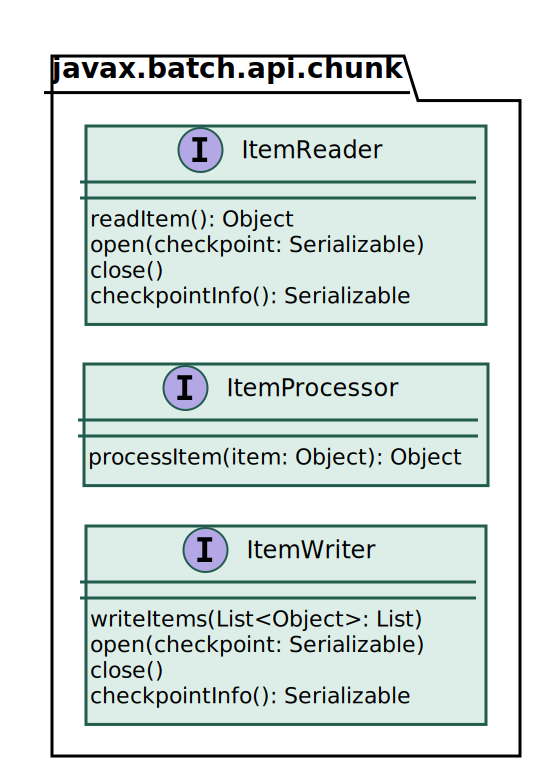
Vereinfachter Batch-Ablauf mit Reader, Processor und Writer

Rückgabewerte/Verhalten:
- null bei read:
Markiert Ende der Verarbeitung
- null bei process:
Überspringt Datensatz (wird nicht geschrieben)
- Exception:
Markiert Datensatz als Fehlerhaft
(Was damit geschieht, hängt von der Konfiguration ab)
Beispielimplementierung: SimpleReader
SimpleReader.java
public class SimpleReader implements ItemReader<Integer> {
private final Iterator<Integer> iter;
public SimpleReader(int numItems) {
iter = IntStream.rangeClosed(1, numItems).boxed().iterator();
}
@Override
public Integer read() {
return iter.hasNext() ? iter.next() : null;
}
}Beispielimplementierung: SimpleProcessor
SimpleProcessor.java
public class SimpleProcessor implements ItemProcessor<Integer, String> {
@Override
public String process(Integer item) {
return String.format("Item %03d", item);
}
}Beispielimplementierung: SimpleWriter
SimpleWriter.java
public class SimpleWriter implements ItemWriter<String> {
@Override
public void write(List<? extends String> items) {
System.out.println(items.stream().collect(Collectors.joining(", ")));
}
}| Writer verarbeitet eine Liste von Items. |
Beispielimplementierung: SimpleJobConfig
SimpleJobConfig.java
@Bean
Job simpleJob() {
Step simpleStep = stepBuilderFactory.get("simpleStep")
.<Integer, String>chunk(1)
.reader(simpleReader())
.processor(simpleProcessor())
.writer(simpleWriter())
.build();
return jobBuilderFactory.get("simpleJob").start(simpleStep).build();
}Transaktionen bei der Batchverarbeitung
Möglichkeiten der Verarbeitung:
Eine Transaktion für jeden einzelnen Datensatz
⇒ zu langsam
Alle Datensätze in einer Transaktion schreiben
⇒ zu fehleranfällig, bei großen Datenmengen nicht machbar
Lösung: Daten Chunk-weise verarbeiten
Step mit RepeatTemplate und TransactionManager
Step mit einzelnem Tasklet
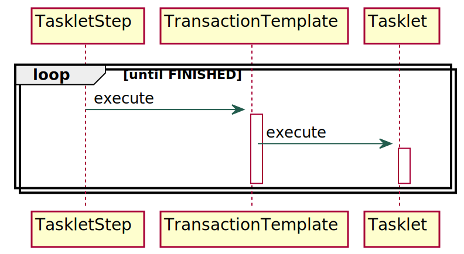
Iteriert wird mit dem
RepeatTemplateDas Tasklet wird innerhalb einer Transaktion ausgeführt
⇒ Für Chunkverarbeitung müsste Tasklet über
die Elemente eines Chunks iterieren
ChunkOrientedTasklet
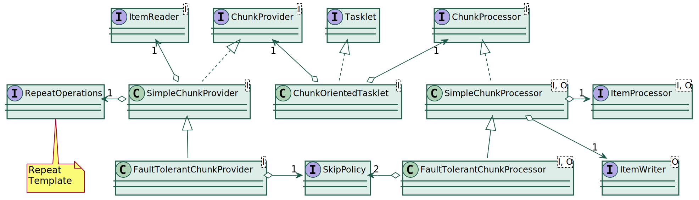
Chunkverarbeitung mit dem ChunkOrientedTasklet
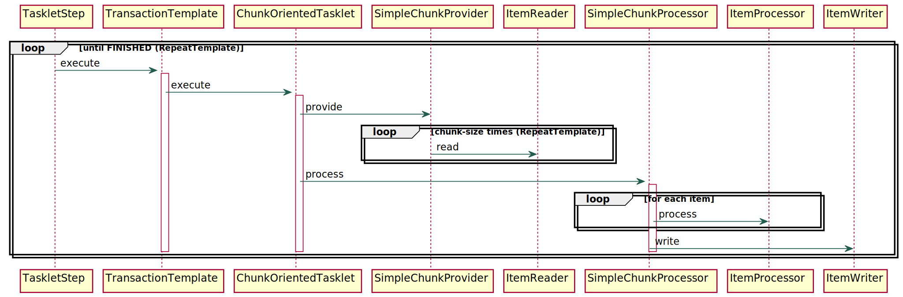
Fehler bei der Batchverarbeitung
Welche Fehler sind bei der Batchverarbeitung zu erwarten?
Wie soll damit umgegangen werden?
| Fehler | Umgang |
|---|---|
… | … |
Beispiele für Fehler
| Datensatz überpringen | Erneut versuchen | Job abbrechen |
|---|---|---|
Programmierfehler | Verbindungsunterbrechung | Systemausfall |
Ungültiges Zeichen in Datensatz | Neustart eines Servers | Fehlende Berechtigung |
Datei defekt | Datensatz gesperrt | Nicht berücksichtigte Exception |
| Das erwünschte Fehlerverhalten gibt man bei der Job-Konfiguration an. |
Konfiguration eines fehlertoleranten Jobs
SkipSimulatorJobConfig.java
@Bean
TaskletStep skipSimulationStep() {
return stepBuilderFactory.get("skip-simulation-step")
.listener(logListener())
.<Ball, Ball>chunk(6)
.reader(ballContainer())
.processor(ballProcessor())
.writer(ballContainer())
.faultTolerant().skip(InvalidBallException.class).skipLimit(3)
.build();
}Der Job …
verarbeitet Chunks der Größe 6,
ist fehlertolerant gegenüber
InvalidBallExceptionundbricht nach 3 Exceptions ab.
Simulation: Fehler bei Chunkverarbeitung

Installationsvoraussetzungen:
JavaFX-SDK muss installiert sein → https://gluonhq.com/products/javafx/
Variable PATH_TO_FX muss auf das lib-Verzeichnis des SDK zeigen (Eclipse)
Aufruf mit VM arguments:
--module-path ${PATH_TO_FX} --add-modules javafx.controls,javafx.fxmlVarianten über
skipsim.model.BallContainer.skipModeeinstellbar…
RetryTemplate — Noch ein Framework für eine Schleife…

Chunkverarbeitung mit Retry

Fehlertoleranz bei ChunkOrientedTasklet
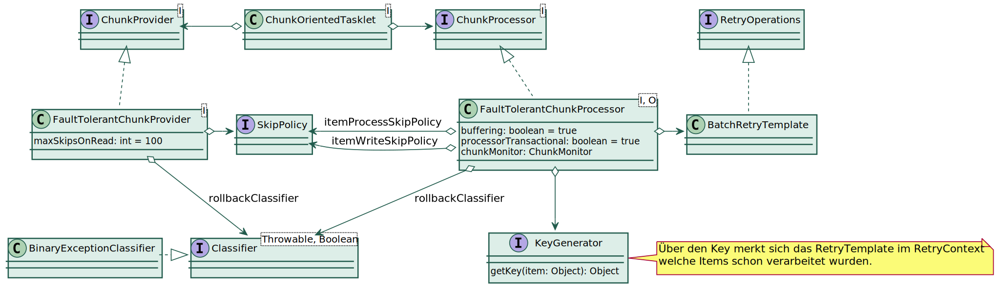
Beispiel für aufwendigere Retry-Konfiguration
TaskletStep step = stepBuilderFactory
.get("retryStep") // StepBuilder
.<Integer, String>chunk(4) // SimpleStepBuilder
.reader(reader()).processor(processor()).writer(writer())
.faultTolerant() // FaultTolerantStepBuilder
.retryLimit(7) // bis zu 7 mal wiederholen
.retry(MyRetryException.class)
.backOffPolicy(new ExponentialBackOffPolicy()) // nach jedem Versuch doppelt so lange Warten
.skip(MyRetryException.class) // nach 7 Fehlversuchen diesen Datensatz überspringen
.skipLimit(3) // Maximal 3 Datensätze überspringen
.listener(loggingSkipListener())
.build();Wiederholt den Process- oder Write-Schritt bei einer
MyRetryExceptionbis zu 7 mal.Wartet vor jedem Versuch 100ms, 200ms, 400ms, …
Überspringt den Datensatz nach 7 fehlgeschlagenen Versuchen.
Loggt übersprungene Datensätze.
Bricht den Step nach 3 übersprungenen Datensätzen ab.
Wissenswertes zur Retry-Konfiguration
Eine
BackOffPolicygibt an, wie lange vor jedem erneuten Versuch gewartet werden soll.Die
ExponentialBackOffPolicywartet beim ersten Versuch 100ms und verdoppelt dann die Wartezeit bis zu maximal 30s. (Ist natürlich alles konfigurierbar).Mehr Einflussmöglichkeiten hat man durch eine eigene
RetryPolicy.
(Spring-Batch bringt einige Varianten davon mit.)Mit einer nachgelagerten
SkipPolicykann man dafür sorgen, das der Datensatz nach n Versuchen übersprungen wird.
Die RetryPolicy hat keine Auswirkung auf Fehler beim Lesen, da nur der
FaultTolerantChunkProcessor ein RetryTemplate verwendet, nicht aber der
FaultTolerantChunkProvider. Letzterer hat nur eine SkipPolicy. |
Komponenten zur Job-Konfiguration
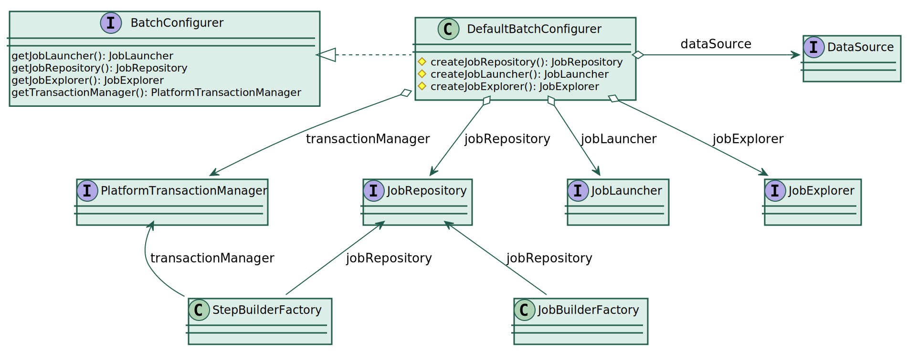
StepBuilder-Methoden

JobBuilder-Methoden
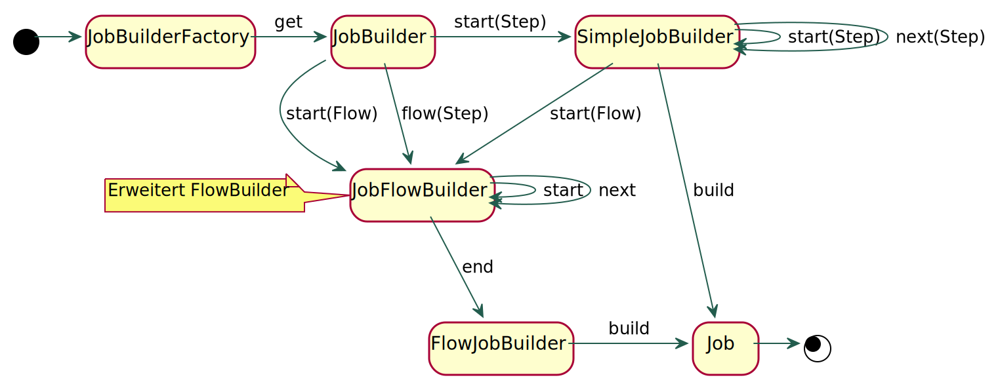
Konfiguration des Transaktions- und Wiederanlaufverhaltens

Listener-Interfaces
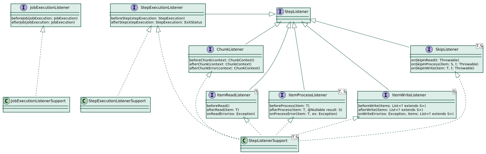
Registrierung der Listener-Interfaces

Wissenswertes zu Listenern
ItemReader,ItemProcessorundItemWriterwerden automatisch alsStepListenerregistiert, sobald sie eines der entsprechenden Interfaces implementieren.Für jede Listener-Methode gibt es eine korrespondierende Annotation (z. B.
@BeforeRead).
Ein Objekt, das eine so annotierte Methode enthält kann genauso also Listener registiert werden, wie ein Objekt, welches das entsprechende Interface implementiert.Zu praktisch jedem Listener gibt es ein entsprechendes JSR-352 Pendant. Diese können genauso wie die Spring-Batch eigenen Listener verwendet werden.
Damit das automatische Registieren funktioniert, muss als Return-Type bei der Bean-Methode
eine Klasse oder Interface angegeben werden, das den bzw. die entsprechenden Listener implementiert.
@Bean ItemReader<String> myItemReader() funktioniert nicht. |
Wozu sind Listener gut?
Monitoring und Tracing
Ausnahmebehandlung
Einflussname auf den Batch-Workflow
Zugriff auf Framework-Informationen
Man kann beispielsweise in beforeStep()auf Inhalte derStepExecutionzugreifen und in einer Instanzvariablen speichern. Andere (Listener)-Methoden kommen so an die entsprechende Information.Kommunikation mit Batch-Framework
Parameterübergabe zwischen Steps
Parameter der Listener-Methoden

Spezielle Listener

Zusammenfassung Lektion 4
Interfaces
ItemReader,ItemProcessorundItemWriterimplementieren und verwendenAufbau und Funktsionsweise des
ChunkorientetTaskletKonfiguration von Fehlertoleranz und Umgang mit Fehlern
Registrierung, Zweck und Verwendung der diversen Listener Interfaces
Job- und Step-Builder im Detail
Aufgabe: (Teil A)
Implementieren Sie einen ItemReader, der eine über einen Parameter einstellbare Anzahl von Zufallsbrüchen mit Nenner und Zähler zwischen -10 und +10 liefert. Nutzen Sie dafür die bereits vorbereitete Klasse
Fraction.Implementieren Sie einen ItemProcessor, der jeden Bruch in der Form
3/4 = 0,750ausgibt. Nutzen Sie dafürFraction.toDescription().Implementieren Sie einen ItemWriter, der alle Brüche eines Chunks in einer Zeile über
System.outausgibt.Stellen Sie alles in einem fehlertoleranten Job zusammen, der bis zu 5
ArithmeticException(wegen Division durch0) zulässt.Führen Sie den Job aus und sehen Sie sich das Job-Repository an (dieses muss natürlich entsprechend konfiguriert sein).
Welche Exceptions landen in
jobExecution.getAllFailureExceptions()?
| Mit Log-Level DEBUG gibt Spring-Batch alle Exception aus. |
Aufgabe: (Teil B - optional)
Erstellen Sie einen weiteren Step, der alle Brüche ausgibt, bei denen ein Fehler aufgetreten ist. Nutzen Sie den
ExecutionContextund geeignete Listener, um diese 2er-Tupel zu übergeben.Führen Sie einen neunen Exit-Status "WARNING" ein, der zurückgegeben werden soll, sobald eine
ArithmeticExceptionaufgetreten ist.Sorgen Sie dafür, dass der Job bei Exit-Status "WARNING" mit Return-Code 99 beendet wird:

→ Agenda
Lektion 5 - Die Spring-Batch Infrastruktur
Überblick zu dieser Lektion
Die Reader und Writer von Spring-Batch
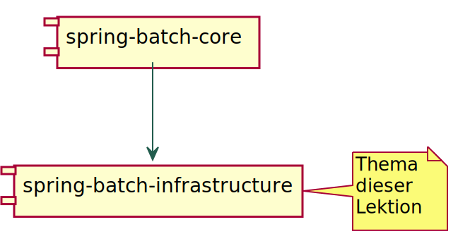
Die org.springframework.batch.item… Packages
Datenbankzugriff
avro | Apache Avro Daten Serialisierung |
data | NoSQL-Datenbanken (GemFire, MongoDB, Neo4j, Spring-Data Repository) |
database | SQL-Datenbanken (Jdbc, Hibernate, JPA, Stored Procedures) |
ldif | LDAP Data Interchange Format: Reader für Zugriff auf LDAP-Quellen |
Messaging
amqp | Reader und Writer für Advanced Message Queuing Protocol |
jms | JMS Reader und Writer |
kafka | Apache Kafka Reader und Writer |
Writer zum versenden von Mails |
Einfache Dateien
file | Framework zum Arbeiten mit Dateien (CSV, feste Spaltenbreite) |
json | Lesen und Schreiben von JSON-Dateien |
xml | Lesen und Schreiben von XML-Dateien |
Support
adapter | Beliebige Methoden als Reader, Processor oder Writer verwenden |
function | Funktionen als ItemProcessor verwenden |
support | Komposition von Readern, Prozessoren und Writern |
validator | Validierung vor oder nach der Verarbeitung im Prozessor |
Datenbankzugriff mit Spring-Batch
| JDBC | JPA | Hibernate | Stored Procedure | |
|---|---|---|---|---|
Reader (Cursor) | JdbcCursor-ItemReader | JpaCursor-ItemReader | HibernateCursor-ItemReader | StoredProcedure-ItemReader |
Reader (paged) | JdbcPaging-ItemReader | JpaPaging-ItemReader | HibernatePaging-ItemReader | |
Writer | JdbcBatch-ItemWriter | JpaItemWriter | Hibernate-ItemWriter |
Der JdbcCursorItemReader verwendet eine eigene Connection und ist somit nicht in
Transaktionen bei der Step-Verarbeitung eingebunden. |
Dateisystemzugriff mit Spring-Batch
Folgende Reader und Writer dienen dem Zugriff auf das Dateisystem:
FlatFileItemReaderundFlatFileItemWriterfür Textdateien (CSV, feste Spaltenbereite)StaxEventItemReaderundStaxEventItemWriterverarbeiten XML-Dateien fragmentweise, wobei jedes Fragment mit OXM (JAXB, Castor, XStream, etc.) gemapped wird.
⇒ OXM mit sehr großen Dateien möglich.JsonItemReaderundJsonFileItemWriterzur sequentiellen Verarbeitung von JSON-Objekten, unterstützt Jackson und GSON.ResourcesItemReaderiteriert über DateienMultiResourceItemReaderzur elementweisen Verarbeitung mehrerer Dateien
| Man kann diese Klassen auch ohne den Overhead des Spring-Batch Frameworks nutzen. Siehe dazu → Informatik Aktuell: Strukturierte Textdateien mit Spring Batch verarbeiten. |
FlatFileItemReader

Beispieldaten für Verarbeitung einer CSV-Datei
Persons.csv
Nachname; Vorname; Geburtsdatum
"Brantwein"; "Franz"; 17.12.1958
"Bolika"; "Anna"; 03.07.1972
"Panse"; "Jim"; 08.02.2002Person.java (mit JSR-303 Annotationen)
public class Person {
@NotBlank
@Size(max = 80)
private String firstName;
@NotNull
@Size(min = 2, max = 80)
private String lastName;
@DateTimeFormat(pattern = "dd.MM.yyyy")
@Past
private LocalDate birthday;
// getters, setters, toString...
}Konfiguration des FlatFileItemReader
@Bean
@JobScope
FlatFileItemReader<Person> personCsvReader(
@Value("#{jobParameters[file]}") Resource source) {
return new FlatFileItemReaderBuilder<Person>()
.name("personCsvReader") // arbitrary name
.saveState(false) // don't save progress in ExecutionContext
.resource(source) // read from this Resource
.delimited() // expect a delimited (CSV) file
.delimiter(";") // use ';' as delimiter instead of ','
.quoteCharacter('\"') // remove quotation from content
.names(new String[] { "lastName", "firstName", "birthday" }) // map column to names
.fieldSetMapper(new BeanWrapperFieldSetMapper<Person>() {
{
setTargetType(Person.class); // initialize mapper
DefaultFormattingConversionService cv = new DefaultFormattingConversionService();
setConversionService(cv); // convert date/time values
}
})
.linesToSkip(1) // skip first (header) row
.build(); // create the reader
}| Für praktisch jeden Reader oder Writer gibt es einen korrespondierenden Builder. |
Die Supportklassen…
ItemReaderAdapter,ItemProcessorAdapterundItemWriterAdapterdienen dazu eine beliebige Methode für die entsprechende Operation zu verwenden. (Dank functional Interfaces überflüssig.)CompositeItemStream,CompositeItemProcessorundCompositeItemWriterdienen dazu, mehrere Streams, Prozessoren bzw. Writer zu verketten. Bei Prozessoren wird das Ergebnis an den nächsten Prozessor weitergereicht.IteratorItemReader,ListItemReaderundListItemWritersind Wrapper für entsprechende Collection-Interfaces.Mit dem
ScriptItemProcessorkann man dieprocess-Logik in ein Skript auslagern.Der
SingleItemPeekableItemReaderist ein Wrapper for einen Reader, mit dem man auf das nächste Item vorausschauen kann.SynchronizedItemStreamReaderist ein Decorator, der Zugriffe auf dieread-Methode synchronisiert.
Spezielle Tasklets
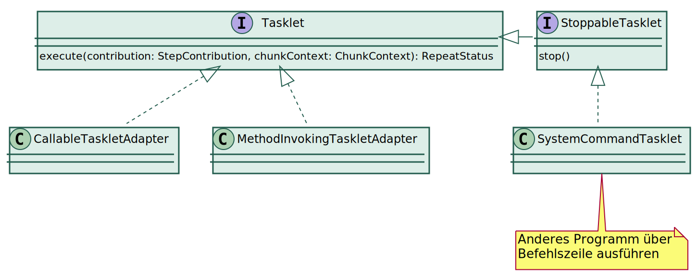
Das ItemStream Interface
Die meisten Reader und Writer müssen geöffnet und geschlossen werden, dafür implementieren Sie das ItemStream Interface:
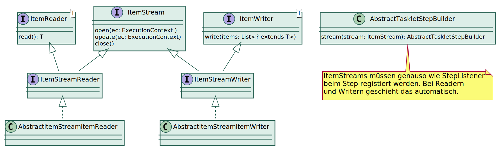
Mit der update Methode kann der ItemStream seinen Forschritt im ExecutionContext speichern.
Diese Information dient zum Wiederanlauf nach einem Abbruch. |
Delegate Pattern
Sehr häufig wird das Delegate Pattern verwendet, um vorhandene Reader, Prozessoren oder Writer für eigene Zwecke anzupassen:
public class DelegateReader implements ItemReader<BigDecimal> {
private final ItemReader<? extends Number> delegate;
public DelegateReader(ItemReader<? extends Number> delegate) {
this.delegate = delegate;
}
@Override
public BigDecimal read() throws Exception {
Number value = delegate.read();
return value == null ? null : BigDecimal.valueOf(value.longValue());
}
}| Vererbung ist keine gute Idee um Code wiederzuverwenden, weil es zu einer starken Kopplung führt und u. a. das Testen erschwert. |
Filterung von Items
Es gibt zwei Stellen an denen Items gefiltert werden können:
ItemReaderüberspringt die zu filternden Items⇒ Übersprungene Datensätze werden nicht gezählt
ItemProcessorfiltert, indem ernullzurück gibtreadCount: Alle DatensätzewriteCount: Nur tatsächlich verarbeitete DatensätzefilterCount: Datensätze, die der Processor herausgefiltert hat
Validierung von Items
Erste Validierung erfolgt durch Reader:
Spalte in CSV-Datei existiert nicht oder kann nicht in entsprechenden Typ umgewandelt werden
Mapping eines XML-Fragments mit OXM nicht möglich
⇒ Bei invaliden Datensätzen wird immer eine Exception geworfen
Für Validierung bei der Verarbeitung definiert Spring-Batch das
ValidatorInterface:public interface Validator<T> { void validate(T value) throws ValidationException; }Dieses Interface wird in Kombination mit einem
ValidatingItemProcessorverwendetDieser kann wahlweise invalide Datensätze filtern oder die Chunkverarbeitung mit einer Exception abbrechen
Man kann entweder davon ableiten oder einen
CompositeItemProcessorverwenden
Spring-Batch Validierungsframework

JSR-303 Abhängigkeiten
Die folgenden Abhängigkeiten sind notwendig, wenn man den BeanValidatingItemProcessor
verwenden möchte:
<dependency>
<groupId>javax.validation</groupId>
<artifactId>validation-api</artifactId>
</dependency>
<dependency>
<groupId>org.apache.tomcat.embed</groupId>
<artifactId>tomcat-embed-el</artifactId>
</dependency>
<dependency>
<groupId>org.hibernate.validator</groupId>
<artifactId>hibernate-validator</artifactId>
</dependency>tomcat-embed-el ist die javax.el Implementierung, die standardmäßig von
Spring-Boot Applikationen verwendet wird. |
Verwendung des BeanValidatingItemProcessor
Konfiguration eines Validators für JSR-303 Annotationen:
@Bean
BeanValidatingItemProcessor<Person> validator() {
BeanValidatingItemProcessor<Person> validator = new BeanValidatingItemProcessor<>();
validator.setFilter(true);
return validator;
}Komposition des Validators mit einem anderen Prozessor:
@Bean
ItemProcessor<PersonJaxb, Person> processor() {
return new CompositeItemProcessorBuilder<PersonJaxb, Person>()
.delegates((ItemProcessor<PersonJaxb, Person>) this::map, validator())
.build();
}XML
Zur Verarbeitung von XML-Dateien dienen die folgenden Klassen:
StaxEventItemReaderStaxEventItemWriter
Diese kombinieren StAX mit OXM:
StAX ist ein Pull-API zur effizienten Verarbeitung großer XML-Dateien
OXM steht für Objekt-XML-Mapping und ist eine Mapping-API von Spring
OXM bietet eine einheitliche API für verschiedene Mapping-Implementierungen,
wie z. B. JAXB, Castor oder XStreamOXM verwandelt eine komplette XML-Datensturktur in eine korrespondierende Objektstruktur oder umgekehrt.
⇒ Die Objektsturktur muss im Arbeisspeicher Platz habenDurch die Kombination von OXM mit StAX können XML-Dateien fragmentweise mit OXM verarbeitet werden.
⇒ Verarbeitung oder Erstellung sehr großer XML-Dateien möglich
JAXB
JAXB steht für Java Architecture for XML Binding
Man kann damit
aus einem XML-Schema korresponierende Java-Klassen (üblicher Weg) oder
aus entsprechend annotierten Java-Klassen ein XML-Schema erzeugen.
OXM bietet einen
Jaxb2Marshallermit dem man sehr einfach JAXB verwenden kann:@Bean Unmarshaller getUnmarshaller() { Jaxb2Marshaller marshaller = new Jaxb2Marshaller(); marshaller.setContextPath(Persons.class.getPackage().getName()); marshaller.setMappedClass(PersonJaxb.class); return marshaller; }Der Jaxb2Marshaller implementiert sowohl das
Marshallerals auch dasUnmarshallerInterface.
Abhängigkeiten für OXM+JAXB2
Seit Java 11 ist JAXB kein Bestandteil des JDK mehr. Deswegen sind jetzt explizite Abhängigkeiten zu JAXB notwendig:
<dependency>
<groupId>org.springframework</groupId>
<artifactId>spring-oxm</artifactId>
</dependency>
<dependency>
<groupId>javax.xml.bind</groupId>
<artifactId>jaxb-api</artifactId>
</dependency>
<dependency>
<groupId>org.glassfish.jaxb</groupId>
<artifactId>jaxb-runtime</artifactId>
</dependency>
<dependency>
<groupId>javax.activation</groupId>
<artifactId>javax.activation-api</artifactId>
</dependency>Konfiguration des JAXB-Plugins
<plugin>
<groupId>org.codehaus.mojo</groupId>
<artifactId>jaxb2-maven-plugin</artifactId>
<version>2.5.0</version>
<dependencies>
<dependency>
<groupId>javax.xml.bind</groupId>
<artifactId>jaxb-api</artifactId>
<version>${javax-jaxb.version}</version>
</dependency>
<dependency>
<groupId>org.glassfish.jaxb</groupId>
<artifactId>jaxb-jxc</artifactId>
<version>${glassfish-jaxb.version}</version>
</dependency>
<dependency>
<groupId>org.glassfish.jaxb</groupId>
<artifactId>jaxb-runtime</artifactId>
<version>${glassfish-jaxb.version}</version>
</dependency>
<dependency>
<groupId>javax.activation</groupId>
<artifactId>javax.activation-api</artifactId>
<version>${javax-activation.version}</version>
</dependency>
</dependencies> <executions>
<execution>
<id>xjc</id>
<goals>
<goal>xjc</goal>
</goals>
</execution>
</executions>
</plugin>Erzeugt Java-Klassen aus
den Schema-Dateien im
Verzeichnis src/main/xsd
entsprechend der Bindings
in src/main/xjb.
Binding eines Schemas
persons.xsd
<?xml version="1.0" encoding="UTF-8" standalone="yes"?>
<xs:schema
targetNamespace="http://anderscore.com/persons"
xmlns:xs="http://www.w3.org/2001/XMLSchema"
xmlns="http://anderscore.com/persons">
<xs:element name="persons">
<xs:complexType>
<xs:sequence>
<xs:element name="person"
type="PersonType"
minOccurs="0"
maxOccurs="unbounded" />
</xs:sequence>
</xs:complexType>
</xs:element>
<xs:complexType name="PersonType">
<xs:sequence>
<xs:element name="firstName" type="xs:string" />
<xs:element name="lastName" type="xs:string" />
<xs:element name="birthday" type="xs:date" />
</xs:sequence>
</xs:complexType>
</xs:schema>bindings.xjb
<jaxb:bindings version="2.0"
xmlns:jaxb="http://java.sun.com/xml/ns/jaxb"
xmlns:xjc="http://java.sun.com/xml/ns/jaxb/xjc"
xmlns:xs="http://www.w3.org/2001/XMLSchema"
jaxb:extensionBindingPrefixes="xjc"
>
<jaxb:bindings
namespace="http://anderscore.com/persons"
schemaLocation="../xsd/persons.xsd"
>
<!-- Bindet XML-Namespace an ein Java-Package -->
<jaxb:schemaBindings>
<jaxb:package name="infra.persons.jaxb" />
</jaxb:schemaBindings>
<!-- Expliziter Klassename für ein XML-Element -->
<jaxb:bindings
node="//xs:complexType[@name='PersonType']">
<jaxb:class name="PersonJaxb" />
</jaxb:bindings>
</jaxb:bindings>
</jaxb:bindings>Konfiguration eines Reader für XML+JAXB
@Bean
@JobScope
StaxEventItemReader<PersonJaxb> personXmlReader(
@Value("#{jobParameters[file]}") Resource source) {
return new StaxEventItemReaderBuilder<PersonJaxb>()
.name("personXmlReader")
.resource(source)
.addFragmentRootElements("person")
.unmarshaller(getUnmarshaller())
.build();
}@Bean
Unmarshaller getUnmarshaller() {
Jaxb2Marshaller marshaller = new Jaxb2Marshaller();
marshaller.setContextPath(Persons.class.getPackage().getName());
marshaller.setMappedClass(PersonJaxb.class);
return marshaller;
}Wichtig ist, dass das Root-Element für das Fragment mit der MappedClass beim
Jaxb2Marshaller übereinstimmt.
JSON
Analog zur XML-Verarbeitung gibt es für JSON die beiden Klassen:
JsonItemReaderJsonItemWriter
Auch diese Verarbeiten bzw. Erstellen JSON-Dateien fragmentweise (ermöglicht große Dateien)
Zur (De-)Serialisierung können wahlweise Jackson oder Gson eingesetzt werden.
Je Fragment ist ein entsprechender
JsonObjectReaderzum Lesen bzw. einJsonObjectMarshallerzum Schreiben notwendig.
Lesen mit Jackson
@Bean
@Qualifier("jackson")
@StepScope
JsonItemReader<Person> personJacksonReader(@Value("#{jobParameters[file]}") Resource source) {
return new JsonItemReaderBuilder<Person>()
.name("personJacksonReader")
.jsonObjectReader(jacksonJsonObjectReader())
.resource(source)
.build();
}
@Bean
JacksonJsonObjectReader<Person> jacksonJsonObjectReader() {
JacksonJsonObjectReader<Person> objectReader = new JacksonJsonObjectReader<>(Person.class);
objectReader.setMapper(objectMapper());
return objectReader;
}
@Bean
ObjectMapper objectMapper() {
ObjectMapper objectMapper = new ObjectMapper();
objectMapper.registerModule(new JavaTimeModule());
return objectMapper;
}Lesen mit Gson
@Bean
@Qualifier("gson")
@StepScope
JsonItemReader<Person> personGsonReader(@Value("#{jobParameters[file]}") Resource source) {
return new JsonItemReaderBuilder<Person>()
.name("personGsonReader")
.jsonObjectReader(gsonJsonObjectReader())
.resource(source)
.build();
}
@Bean
GsonJsonObjectReader<Person> gsonJsonObjectReader() {
GsonJsonObjectReader<Person> objectReader = new GsonJsonObjectReader<>(Person.class);
objectReader.setMapper(gson());
return objectReader;
}
@Bean
Gson gson() {
return new GsonBuilder()
.registerTypeAdapter(LocalDate.class, new LocalDateTypeAdapter().nullSafe())
.create();
}
// see https://stackoverflow.com/questions/39192945/serialize-java-8-localdate-as-yyyy-mm-dd-with-gson/39193077#39193077
static class LocalDateTypeAdapter extends TypeAdapter<LocalDate> {
@Override
public void write(JsonWriter out, LocalDate value) throws IOException {
out.value(DateTimeFormatter.ISO_LOCAL_DATE.format(value));
}
@Override
public LocalDate read(JsonReader in) throws IOException {
return LocalDate.parse(in.nextString());
}
}Zusammenfassung Lektion 5
Überblick über die Reader und Writer von Spring-Batch
Reader und Writer für die Datenbankzugriff
Dateisystemzugriff und Verarbeitung von strukturierten Textdateien (CSV, XML, JSON)
Konfiguration des
FlatFileItemReader.Hilfsklassen für Komposition und Dekoration von Readern und Writern
Validierung
Aufgabe:
Erstellen Sie einen Batch-Job, der die Einträge aus der Tabelle
BATCH_STEP_EXECUTIONals CSV-Datei exportiert.Verwenden Sie dazu die Klasse
StepExecutionData,das SQL-Statement
select * from BATCH_STEP_EXECUTION order by STEP_EXECUTION_ID,den
JdbcCursorItemReaderundden
FlatFileItemWriterBuilder.
Filtern Sie alle Step-Executions mit Read-Count 0 heraus. Verwenden Sie dafür den
BeanValidatingItemProcessor(siehe@Min(value = 50)inStepExecutionData).Optional: Exportieren Sie die Einträge als XML- oder JSON-Datei.
→ Agenda
Lektion 6 - Parallelverarbeitung
Überblick zu dieser Lektion
Optimierung…
Rule 1: Don’t do it.
Rule 2: (for experts only) Don’t do it yet.
Principals of Program Design
— Michael A. Jackson (1975)
— Michael A. Jackson (1975)
More computing sins are committed in the name of efficiency (without necessarily achieving it) than for any other single reason — including blind stupidity.
— W. A. Wulff
Vorüberlegungen zur Parallelisierung
Muss das sein?
⇒ Lieber erst mal die Chunkgröße justieren
⇒ Erst mal ermitteln, wo der Performance-Engpass überhaupt liegt
Sie sind nicht allein!
⇒ Welche (Online-)Anwendungen verwenden die gleichen Backend-Systeme?
⇒ Welche Last ist zu welcher Uhrzeit vertretbar, ohne den Betrieb zu behindern?
Welche Art der Parallelisierung ist sinnvoll?
⇒ Bei äußerst rechenintensiven Anwendungen:
Verteilung auf mehrere Rechner (Remote Chunking/-Partitioning)⇒ Bei langsamer I/O (Webservice-Aufruf, Archivsystem, Datenbank): Multithreading
Möglichkeiten der Parallelisierung
Einen Step mit mehreren Threads ausführen
Mehrere Steps gleichzeitig ausführen (Flows)
Partitionierung
Remote Chunking
Step mit mehreren Threads ausführen
@Bean
ThreadPoolTaskExecutor taskExecutor() {
ThreadPoolTaskExecutor taskExecutor = new ThreadPoolTaskExecutor();
taskExecutor.setCorePoolSize(8);
return taskExecutor;
}@Bean
TaskletStep parallelStep() {
TaskletStep step = stepBuilderFactory
.get("parallelStep")
.<Integer, String>chunk(5)
.reader(reader()).processor(processor()).writer(writer())
.taskExecutor(taskExecutor()) // Ausführung mit mehreren Threads
.throttleLimit(4) // begrenzt Anzahl der Threads (default: 4)
.build();
return step;
}TaskExecutorRepeatTemplateführtTaskletmit mehreren Threads ausReader, Processor und Writer müssen thread-save sein
Chunk-size bestimmt Synchronisationsaufwand
TaskExecutor Varianten und deren Verwendung
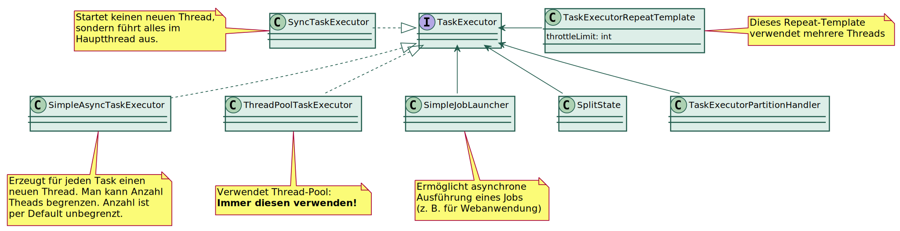
Wo kann man überall einen TaskExecutor angeben?

Partitionierung
Erzeugt mehrere Kopien eines Steps.
Jeder Step hat einen eigenen Namen (z. B. simpleStep:partition1), einen eigenen ExecutionContext und wird als separater Step im Repository gespeichert.
Jeder Step wird nur von einem Thread ausgeführt.
Für jede mit @StepScope annotierte Bean (z. B. Reader, Processor oder Writer) wird für jeden Step ein eigenes Exemplar erzeugt ⇒ Bean braucht nicht thread-safe sein
(D. h. man kann nach belieben Instanzvariablen verwenden)Ermöglicht Aufteilung der Datenmenge (Partitioniertung) und Verteilung auf die einzelnen Steps
Sinnvolle Kriterien zur Aufteilung notwendig
Auch ohne Partitionierung der Daten in Kombination mit @StepScope sinnvoll
In Kombination mit Remote-Verarbeitung möglich
PartitionStep Ausführung

Bestandteile eines PartitionStep

PartitionStep implementieren
- Partitioner:
Interface selbst implementieren
Konvention für Key: partition1, partition2, …
Information aus dem PartionStep-ExecutionContext auf die einzelnen ExecutionContexte verteilen
- StepExecutionAggregator:
DefaultStepExecutionAggregatorerweiternErgebnisse aus den einzelnen Step-ExecutionContexten zusammenfassen und in den PartionStep-ExecutionContext übertragen.
Einfacher Partition-Step zur parallelen Ausführung eines Steps
Dieser Step wird repliziert und parallel ausgeführt:
return stepBuilderFactory
.get("simpleStep")
.<Integer, String>chunk(4)
.reader(reader()).processor(processor()).writer(writer())
.build();Der PartitionStep:
return stepBuilderFactory.get("partitionStep")
.partitioner("stepx", new SimplePartitioner()) // Präfix für partitionierte Steps
.step(step()) // Der Step, der von meheren Threads ausgeführt wird
.gridSize(5) // Anzahl Threads
.taskExecutor(taskExecutor())
.build();Der Job für den PartitionStep:
return jobBuilderFactory
.get("partitionJob")
.start(partitionStep())
.build();@StepScope bei (Reader), Processor und Writer erspart synchronized.⇒ Möglichst immer PartitionStep zur parallelen Ausführung eines Steps verwenden. |
Aufgabe 1: Summe von 1 bis 100
Implementieren Sie einen Job, der alle Zahlen von 1 bis 100 zusammenzählt. Partitionieren Sie dafür die Zahlenmenge in 5 gleich große Teile um diese parallel aufzusummieren.
Geben Sie danach das Ergebnis über einen weiteren Tasklet-Step auf System.out aus.
Sie können für diese Aufgabe die vorhandenen Klassen
NumberRangePartitioner,NumberRangeReader,ShowResultTasklet,SumAggregatorundSumItemWriterverwenden.Prüfen Sie den Job mit dem
PartitionGaussTest.
| Versuchen Sie den Job erst mal ohne Partitionierung zum Laufen zu bekommen. |
Die Klassen JobParameterExecutionContextCopyListener und ExecutionContextPromotionListener
könnten hilfreich sein. |
Workflows mit Spring-Batch
Spring-Batch kann mehr als Steps der Reihe nach ausführen:
Mehrere Steps können gleichzeitig ausgeführt werden
Man kann abhängig von einer Bedingung zu einem von mehreren möglichen Folgesteps verzweigen
Damit lassen sich komplexe Workflows realsieren
Beispiel für Job mit Flow
FlowJobConfig.java
Step step3 = createTaskletStep("step 3", ExitStatus.FAILED);
Step step3x = createTaskletStep("step 3x");
Step step4 = createTaskletStep("step 4");
Flow flow1 = new FlowBuilder<Flow>("flow1")
.from(createTaskletStep("step 2a 1"))
.next(createTaskletStep("step 2a 2"))
.build();
Flow flow2 = new FlowBuilder<Flow>("flow2")
.from(createTaskletStep("step 2b"))
.build();
Job job = jobBuilderFactory
.get("flowJob")
.start(createTaskletStep("step 1"))
.split(taskExecutor()).add(flow1, flow2)
.next(step3)
.on(ExitStatus.COMPLETED.getExitCode()).to(step4)
.from(step3).on(ExitStatus.FAILED.getExitCode())
.to(step3x).next(step4)
.end()
.build();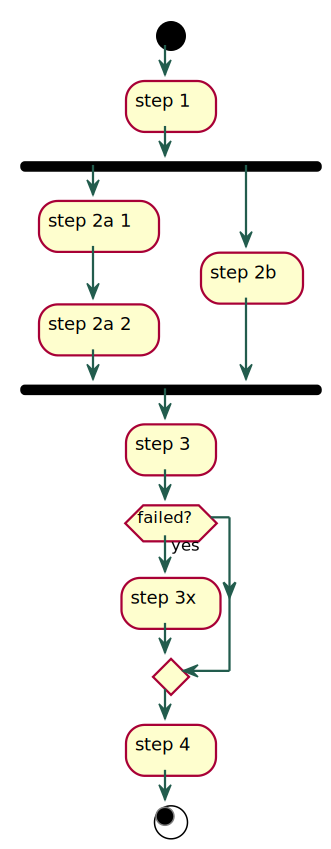
Flows — State-Pattern
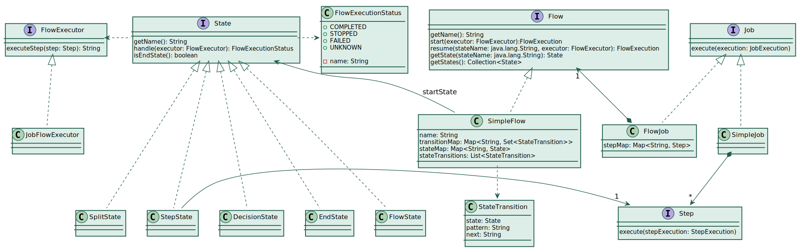
Builder-API für Flows

Die wichtigsten Methoden für Flows
flow(Step).next(Flow/Step).next(Flow/Step).end()
start(Flow).next(Flow/Step).next(Flow/Step).end()
split(TaskExecutor).add(Flow, Flow,…).build()
on(String exitCode).to(Flow/Step)
from(Flow/Step).to(Flow/Step)
from(Flow/Step).on(String).to(Flow/Step)
from(JobExecutionDecider).on(String).to(Flow/Step)
Praktische Anwendung von Flows: Producer/Consumer
Erster Step liest Daten sequentiell z. B. von einer CSV-Datei
Zweiter Step speichert Daten und nutzt dafür mehrere Threads
Sinnvoll wenn paralleles Schreiben den Durchsatz erhöht (Webservice, Datenbank)
Statt über einen Writer kann man die Queue auch über einen Listener (z. B.
ChunkListener) befüllen.
| Mit einer In-Memory-Queue gehen, die Daten bei einem Abbruch verloren, obwohl sie in Step 1 bereits als verarbeitet markiert wurden. Standardmäßig werden diese Daten also nicht erneut gelesen. |
Interaktion der Steps bei Producer/Consumer

Zusammenfassung Lektion 6
Vor Einsatz von Parallelverarbeitung erst mal Notwendigkeit, Nutzen und Auswirkungen prüfen!
Parallelverarbeitung geht immer über einen
TaskExecutor, davon gibt es mehrere Varianten.Einfachste Parallelverarbeitung ist das Ausführen eines Steps mit mehreren Threads.
Mittels Partitionierung arbeitet jeder Thread auf eigenen Daten.
Flows ermöglichen die gleichzeitige Ausführung verschiedener Steps.
Aufgabe 2: Producer/Consumer
Verwenden Sie als Ausgangspunkt den Job in
ProducerConsumerJobConfigundProducerConsumerJobTestum diesen Job auszuführen.Teilen Sie den
simpleStepin einen Producer-Step und einem Consumer-Step auf.Nutzen Sie die
ProducerConsumerQueueals Queue.Verwenden Sie
-1als Endemarkierung.Sie benötigen 3 Flows für den Job: Producer-, Consumer-, und Split-Flow.
Führen Sie den Consumer mit mehreren Threads und einem
throttleLimitvon 8 aus.
| Mit zu vielen Threads, gehen die Datenbankconnections aus! |
…
→ Agenda
Lektion 7 - Remote-Verarbeitung
Überblick zu dieser Lektion
Lastverteilung auf mehrere Rechner
Wann ist Lastverteilung auf mehere Rechner sinnvoll?
Lastverteilung ist sinnvoll bei:
rechenintensiven Jobs
großen Datenmengen (IO, Arbeitsspeicher)
evtl. zur Erhöhung der Ausfallsicherheit
aber
Lastverteilung erhöht die Komplexität
Kommunikation zwischen Manager und Workern erhöht IO-Last
⇒ Kosten und Nutzen abwägen!
Partitionierung ist sinnvoll, wenn ein externer Dienst (Datenbank, Webservice)
Wartzeiten verursacht.
Lastverteilung ist sinnvoll, wenn die Leistung eines Rechners nicht mehr ausreicht.
Einfachste Variante der Lastverteilung (unabhängig von Spring-Batch)
Voraussetzungen:
Anzahl der Knoten ist fix
Name oder IP-Adressen der Knoten sind bekannt und fest
Datenmenge läßt sich in n Paritionen aufteilen (n = Anzahl Knoten)
Umsetzung:
Knotenname wird als Parameter übergeben
Datenmenge wird immer gleich partitioniert (auf jedem Knoten)
Jede Partition ist von einem Knoten zu bearbeiten (Zuordnung über Knotenname)
Lastverteilung mit Spring-Batch
Remote Chunking
Remote Paritioning
Remote Chunking

Remote Partitioning
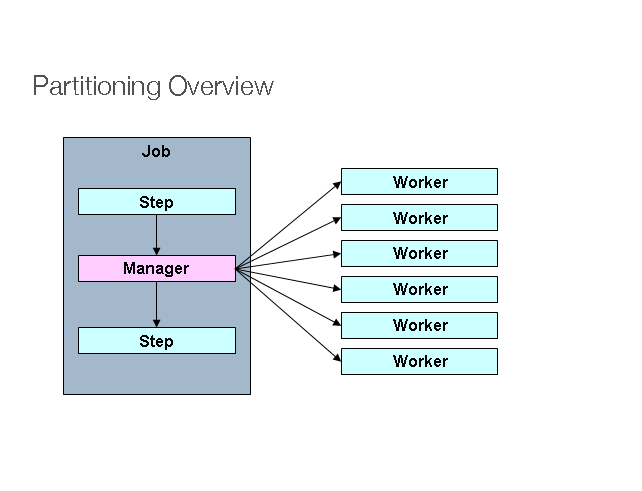
Messaging
Verschicken von Nachrichten über Rechnergrenzen hinweg
Erfordert Messaging-Middleware (Broker)
Empfänger kann (temporär) offline sein
Zustellung wird grantiert
Einstellen und Abholen von Nachrichten ist transaktional
Kann für entfernte Methodenaufrufe (RMI) verwendet werden
Message in Spring Integration:
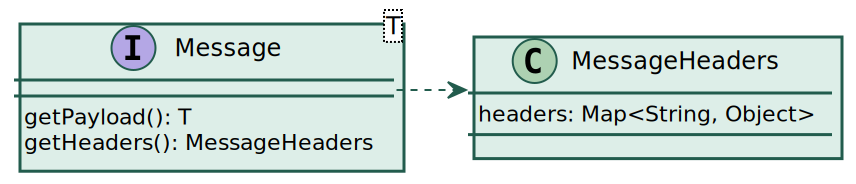
ActiveMQ
Pure Java
Sehr einfach aufzusetzen (Maven-Plugin, ZIP-File, Docker-Image)
Kann in eigene Anwendungen intergriert werden (eigener Broker)
Verschiedene Persistence Adapter verfügbar (u. a. In-Memory)
Unterstützt verschieden Protokolle: JMS, AMQP, STOMP, MQTT
In zwei Ausprägungen verfügbar: ActiveMQ 5 "Classic" und ActiveMQ Artemis (non-blocking)
Alternativen: RabbitMQ, Kafka
Konfiguration einer JMS-ConnectionFactory für ActiveMQ
@Configuration
@PropertySource("classpath:remote.properties")
public class ActiveMQConfig {
@Value("${broker.url}")
private String brokerUrl;
@Bean
ActiveMQConnectionFactory connectionFactory() {
ActiveMQConnectionFactory connectionFactory = new ActiveMQConnectionFactory();
connectionFactory.setBrokerURL(this.brokerUrl);
connectionFactory.setTrustAllPackages(true);
return connectionFactory;
}
}remote.properties
broker.url=tcp://localhost:61616ChunkOrientedTasklet bei Remote-Chunking

Worker bei Remote-Chunking

StepBuilder für Remote-Chunking

Konfiguration von Manager und Worker für Remote-Chunking
Manager:
@Configuration
@Import(ActiveMQConfig.class)
@EnableBatchProcessing
@EnableBatchIntegration
public class SampleManagerConfig {
@Autowired
private RemoteChunkingManagerStepBuilderFactory managerStepBuilderFactory;
@Autowired
private ActiveMQConnectionFactory connectionFactory;
//...
}Worker:
@Configuration
@Import(ActiveMQConfig.class)
@EnableBatchProcessing
@EnableBatchIntegration
public class SampleWorkerConfig {
@Autowired
private RemoteChunkingWorkerBuilder<Integer, Integer> remoteChunkingWorkerBuilder;
@Autowired
private ActiveMQConnectionFactory connectionFactory;
//...
}Konfiguration eines Outbound-Flow
@Bean
DirectChannel requests() {
return new DirectChannel();
}
@Bean
public IntegrationFlow outboundFlow() {
return IntegrationFlows
.from(requests())
.handle(Jms.outboundAdapter(connectionFactory)
.destination("sample.requests"))
.get();
}| Die selbe Destination muss im Worker als Inbound-Flow konfiguriert werden. |
Konfiguration eines Inbound-Flow
@Bean
public QueueChannel replies() {
return new QueueChannel();
}
@Bean
public IntegrationFlow inboundFlow() {
return IntegrationFlows
.from(Jms.messageDrivenChannelAdapter(connectionFactory)
.destination("sample.replies"))
.channel(replies())
.get();
}Der ChunkMessageChannelItemWriter (Manager) benötigt einen PollableChannel,
also z. B. den QueueChannel. In allen anderen Fällen genügt ein einfacher MessageChannel,
also z. B. DirectChannel. |
Manager-Step und zugehöriger Worker-Flow
SampleRemoteChunkingManagerConfig.java
@Bean
public TaskletStep managerStep() {
return this.managerStepBuilderFactory.get("managerStep")
.chunk(10)
.reader(reader)
.outputChannel(requests())
.inputChannel(replies())
.build();
}SampleRemoteChunkingWorkerConfig.java
@Bean
public IntegrationFlow workerIntegrationFlow() {
return this.remoteChunkingWorkerBuilder
.itemProcessor(processor)
.itemWriter(writer)
.inputChannel(requests())
.outputChannel(replies())
.build();
}Aufgabe 1: Job auf Remote-Chunking umstellen
Importieren Sie das Projekt exercises-remote.
Stellen Sie
LocalDuplicateJobConfigauf Remote-Chunking um, indem SieDuplicateManagerConfigundDuplicateWorkerConfigimplementieren.
Nutzen Sie dafür die vorgebene
ActiveMQConfig.Starten Sie einen ActiveMQ-Broker, indem Sie in dem Projekt activemq-broker über die Befehlszeile
mvnaufrufen.Nutzen Sie die beiden Unittests
DuplicateManagerStarterundDuplicateWorkerStarterum Manager und Worker auszuführen.Setzen Sie Breakpoints in der
read- bzw.process-Methode und sehen Sie sich die Datenstrukturen von demChunkOrientedTaskletund demChunkProcessorChunkHandleran.Sehen Sie sich den Repository-Inhalt zu diesem Remote-Chunking Job an.
Wiederholung: PartitionStep Ausführung
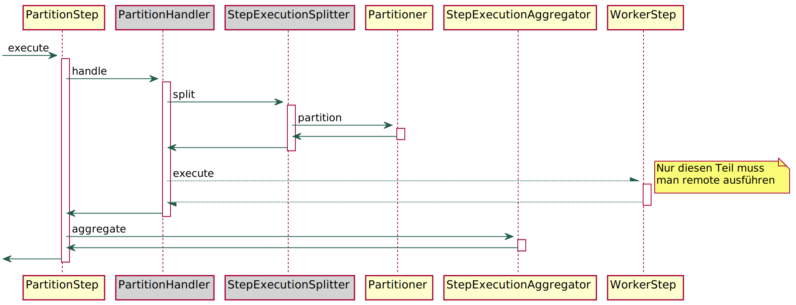
PartitionStep bei Remote-Partitioning

Worker bei Remote-Partitioning

StepBuilder für Remote-Partitioning
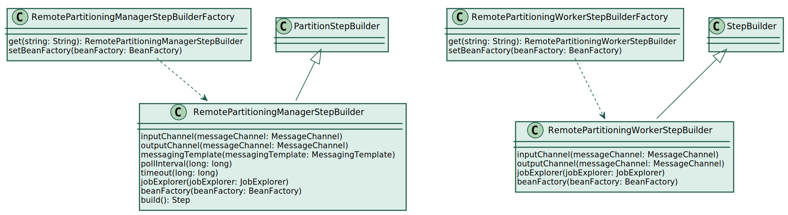
Manager-Step und zugehöriger Worker-Flow bei Remote-Partitioning
SampleRemotePartitioningManager.java
Step step = managerStepBuilderFactory
.get("managerStep")
.partitioner("workerStep", partitioner)
.outputChannel(requests())
.inputChannel(replies())
.build();SampleRemotePartitioningWorker.java
Step step = workerStepBuilderFactory
.get("workerStep")
.inputChannel(requests())
.outputChannel(replies())
.<Integer, Integer>chunk(10)
.reader(reader)
.processor(processor)
.writer(writer)
.build();Bei Remote-Partitioning darf der Input-Channel für die replies (Manager)
kein PollableChannel sein. Man muss also DirectChannel statt QueueChannel
verwenden. |
Unterschiede Remote-Chunking — Remote-Partitioning
Remote-Chunking
Reader im Manager
Gelesene Items werden als
Message an Worker verschicktViel Netzwerk-Traffic
Sinnvoll, wenn Reader direkt
auf Dateisystem zugreift
Remote-Partitioning
Reader auf jedem Worker
Nur Metainformationen über Partions-
grenzen werden an Worker verschicktNetzwerk-Traffic moderat
Sinnvoll, wenn Reader die Daten von
einer zentralen Datenquelle (Datenbank,
Messaging-Middleware, Webservice) bezieht
Zusammenfassung Lektion 7
Einfachste Partitionierung über Parameter
Messaging: transaktional und garantierte Zustellung
Remote-Chunking: Ein Reader, viel Traffic
Remote-Partitioning: Jeder Worker hat eigenen Reader
Aufgabe 2: Summe von 1 bis 100 mit Remote-Partitioning
Stellen Sie die Partitioning-Aufgabe aus der
letzten Lektion auf Remote-Partitioning um.
→ Agenda
Lektion 8 - Betrieb von Batch-Anwendungen
Überblick zu dieser Lektion
Möglichkeiten einen Batch-Job anzustoßen
Über die Befehlszeile mit dem
CommandLineJobRunnerProgrammatisch über
JobOperator.start()orJobLauncher.run()Als Spring-Boot-Anwendung:
Standardmäßig werden alle Jobs beim Hochfahren der Anwendung ausgeführt. Dieses Verhalten kann man in der application.properties mitspring.batch.job.enabled=falseunterbinden.Über eine Message via Spring-Integration mit dem
JobLaunchingMessageHandler
Möglichkeiten einen Batch-Job auszuliefern
Als Shell-Skript (.bat, .sh) mit allen Abhängigkeiten in einem Verzeichnis
Als Maven pom.xml oder als Gradle-Skript
Als Spring-Boot-Anwendung (uber jar)
Als Docker-Image
Als Bestandteil einer bestehenden (Web-)Anwendung
Zeitgesteuerte Ausführung von Batch-Jobs
Mit Bordmitteln des Betriebssystems: Crontab, Windows Task Scheduler (Aufgabenplanung)
Enterprise Job-Scheduler
Mit
@EnableScheduling+@Scheduledin SpringQuartz Job Scheduling Library
Verwendung der TaskScheduler-Abstraktion von Spring
@EnableScheduling
public class HelloScheduledConfig {
@Scheduled(cron = "${ops.hello.schedule.cron:-}")
void executeHelloJob() {
// ...
}
}Die Property ops.hello.schedule.cron muss einen Cron-Ausdruck enthalten.
Siehe
→ Java-Docs zu CronSequenceGenerator. Die Endung :- bewirkt, dass ein leerer String als
Cron-Ausdruck verwendet wird, wenn die Property nicht gesetzt ist. Damit wird die Ausführung unterbunden.
Wenn beispielsweise der Job ab 0:03 Uhr alle 5 Minuten laufen soll, ist folgender Eintrag in der application.properties notwendig:
ops.hello.schedule.cron = 0 3/5 * * * *Quartz Job Scheduling Library
Open-Source (Apache 2.0 license)
Java
Leicht in beliebige Applikationen zu integrieren
Job-Store wahlweise
In-Memory (
RAMJobStore) und Konfiguration via quartz.propertiesJDBC sowohl über DataSource-Transaktionen (
JobStoreTX)
als auch JTA-Transaktionen (JobStoreCMT)
Von Spring unterstützt
Die wichtigsten Elemente von Quartz

| Interfaces sind von Quartz und Klassen sind von Spring. |
QuartzJobBean um einen Batch-Job zu starten
public class HelloQuartzJob extends QuartzJobBean {
private static final Logger log = LoggerFactory.getLogger(HelloQuartzJob.class);
@Autowired
private JobExplorer jobExplorer;
@Autowired
private JobLauncher jobLauncher;
@Autowired
private Job helloQuartzJob;
@Override
protected void executeInternal(JobExecutionContext context) throws JobExecutionException {
JobParameters jobParameters = new JobParametersBuilder(jobExplorer)
.addDate("scheduled.at", context.getScheduledFireTime()) // wird im Cluster nur einmal ausgeführt
.toJobParameters();
try {
JobExecution jobExecution = jobLauncher.run(helloQuartzJob, jobParameters);
log.info("HelloQuartzJob finished: {}", jobExecution);
if (!ExitStatus.COMPLETED.getExitCode().equals(jobExecution.getExitStatus().getExitCode())) {
throw new JobExecutionException("HelloQuartzJob ended with " + jobExecution.getExitStatus());
}
} catch (JobExecutionAlreadyRunningException | JobRestartException
| JobInstanceAlreadyCompleteException | JobParametersInvalidException ex) {
log.error("HelloQuartzJob failed.", ex);
throw new JobExecutionException("HelloQuartzJob failed", ex);
}
}
}Quartz-Konfiguration (Spring-Boot)
@Configuration
public class QuartzConfig {
@Value("${ops.quartz.cron:0 0/5 * * * ?}")
private String cronExpression;
@Bean
JobDetail helloQuartzJobDetail() {
return JobBuilder.newJob(HelloQuartzJob.class)
.storeDurably()
.build();
}
@Bean
CronTriggerFactoryBean cronTrigger() {
CronTriggerFactoryBean cronTrigger = new CronTriggerFactoryBean();
cronTrigger.setCronExpression(cronExpression);
cronTrigger.setJobDetail(helloQuartzJobDetail());
return cronTrigger;
}
}application.properties:
spring.quartz.job-store-type=jdbc
spring.quartz.jdbc.initialize-schema=always
ops.quartz.cron = 0 0/5 * * * ?Spring-Integration und Spring-Batch
Der
JobLaunchingMessageHandlerstartet einen Batch-Job nach Empfang einer Message.Inhalt (Payload) der Message ist ein
JobLaunchRequest.Ein
JobLaunchRequestenthält den Job und die Parameter.Spring-Integration ermöglicht die Modellierung einer Software als Datenfluss entsprechend der Enterprise Integration Patterns, auch ohne Messaging-Middleware.
Es ist auch möglich Webservices, E-Mail, FTP etc. zu integrieren.
Beispielsweise erzeugt ein FileInboundChannelAdapter eine Nachricht, sobald eine Datei einem bestimmten Verzeichnis angelegt wird und kann damit direkt einen Batch-Job zum Verarbeiten dieser Datei anstoßen.
Start eines Batch-Jobs bei Anlegen einer Datei
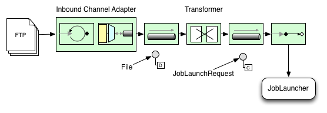
Implementierung des Transformers
FileMessageToJobRequest.java
public class FileMessageToJobRequest {
private Job job;
private String fileParameterName;
public void setFileParameterName(String fileParameterName) {
this.fileParameterName = fileParameterName;
}
public void setJob(Job job) {
this.job = job;
}
@Transformer // diese Annotation macht die Klasse zu einem Transformer
public JobLaunchRequest toRequest(Message<File> message) {
JobParametersBuilder jobParametersBuilder = new JobParametersBuilder();
jobParametersBuilder.addString(fileParameterName,
message.getPayload().getAbsolutePath()); // Inhalt der Message ist ein File Objekt
return new JobLaunchRequest(job, jobParametersBuilder.toJobParameters());
}
}Konfiguration des Transformers
@Bean
public FileMessageToJobRequest fileMessageToJobRequest(Job filePollerJob) {
FileMessageToJobRequest fileMessageToJobRequest = new FileMessageToJobRequest();
fileMessageToJobRequest.setFileParameterName("input.file.name");
fileMessageToJobRequest.setJob(filePollerJob);
return fileMessageToJobRequest;
}Der Reader kann damit folgendermaßen auf den Parameter zugreifen:
@Bean
@StepScope
ResourcesItemReader filePollerReader(@Value("#{jobParameters['input.file.name']}") String resource) {
ResourcesItemReader reader = new ResourcesItemReader();
reader.setResources(new Resource[] { new FileSystemResource(resource) });
return reader;
}Konfiguration des Gateways
@Bean
public JobLaunchingGateway jobLaunchingGateway() {
SimpleJobLauncher simpleJobLauncher = new SimpleJobLauncher();
simpleJobLauncher.setJobRepository(jobRepository);
simpleJobLauncher.setTaskExecutor(new SyncTaskExecutor());
JobLaunchingGateway jobLaunchingGateway = new JobLaunchingGateway(simpleJobLauncher);
return jobLaunchingGateway;
}Mit dem
SyncTaskExecutorwird die Antwort erst verschickt, wenn der Job fertig istMit einem
AsyncTaskExecutorwird die Antwort sofort verschickt.
⇒ Anhand der Job-ID in der Antwort kann man das JobRepository pollen, um den Fortschritt zu ermittelnAlternativ kann der Job auch aktiv Nachrichten zu seinem Fortschritt verschicken
| Die Datei muss gelöscht werden, bevor die Antwort eintrifft, andernfalls wird sofort eine neue Message zur selben Datei verschickt. |
Konfiguration des Flows
@Bean
public IntegrationFlow integrationFlow(FileMessageToJobRequest fileMessageToJobRequest) {
FileInboundChannelAdapterSpec source = Files
.inboundAdapter(new File("target/myfiles"))
.filter(new SimplePatternFileListFilter("*.txt"));
return IntegrationFlows.from(source, this::configureEndpoint)
.handle(fileMessageToJobRequest)
.handle(jobLaunchingGateway())
.log(LoggingHandler.Level.WARN, "headers.id + ': ' + payload") // response loggen
.get();
}
private void configureEndpoint(SourcePollingChannelAdapterSpec channelAdapter) {
PollerSpec poller = Pollers.fixedRate(1000).maxMessagesPerPoll(1);
channelAdapter.poller(poller);
}Aufgabe 1: Scheduling und Intergration
Sehen Sie sich den Sourcecode der besprochenen Beispiele im Projekt
exercises-opsan.Ändern Sie die Zeiten für das Scheduling und führen Sie die Beispielanwendung aus.
Führen Sie den
FilePollerJobaus, indem Sie eine entsprechende Datei anlegen.Können Sie die ausgeführten Jobs und Steps im Repository finden?
Was passiert, wenn Sie in
FilePollerJobConfigdenSyncTaskExecutordurch einenSimpleAsyncTaskExecutoraustauschen?Setzen Sie Breakpoints im Tasklet bzw. im Processor und versuchen Sie die besprochenen Klassen in den Laufzeit-Datenstrukturen zu finden.
REST
REST in wenigen Worten:
Bei Rest geht es um Ressourcen (Dinge), die eindeutig über URI identifiziert werden
Aktionen beschränken sich auf CRUD-Operationen (HTTP-Verben)
Operationen (Funktionsaufrufe) sind über POST-Request möglich, sollten aber vermieden werden
Beispiel:
Statt der Operation Überweise Betrag X von A nach B
wird eine neue Überweisung angelegt, die über eine eigene URI identifiziert werden kann
Mehr dazu → https://www.restapitutorial.com
RESTful job processing
Hier muss man unterscheiden:
Der Job steht im Mittelpunkt
Das Ergebnis der Jobausführung (z. B. ein Report) steht im Mittelpunkt
Jobs per REST-API steuern
POST https://api.site.com/batchjobs/helloJob name='Egon' HTTP/1.1 201 Created Location /batchjobs/helloJob/123
Erzeugt eine neue Job-Execution mit der ID 123
Wichtig ist ein SimpleJobLauncher mit einem AsyncTaskExecutor
GET https://api.site.com/batchjobs/helloJob/123
Liefert Meta-Information (Startzeitpunkt, Parameter, Status, …) der JobExecution
GET https://api.site.com/batchjobs/helloJob
Liefert Liste aller JobExecutions
PUT https://api.site.com/batchjobs/helloJob status=stopped
Ergebnis eines Batch-Jobs per REST-API
POST https://api.site.com/reports/2020-03 HTTP/1.1 202 Accepted Location /queue/124
Startet den createReport Batch-Job mit Execution-ID 124
GET https://api.site.com/batchjobs/createReport/124
Liefert Meta-Information zur Job-Ausführung
GET https://api.site.com/queue/124 HTTP/1.1 200 Ok
{ "status": "STARTED" }Liefert Status-Info, solange der Job noch läuft
GET https://api.site.com/queue/124 HTTP/1.1 303 See Other Location: /reports/2020-03
oder ein Redirect, falls der Job fertig ist.
Batchanwendungen in der Cloud
Die Cloud bietet fast unbegrenzt Rechenleistung
Diese Rechenleistung verursacht nur solange Kosten, solange sie tatsächlich genutzt wird
Batch-Jobs benötigen sehr viele Rechenleistung, aber nur solange sie tatsächlich laufen
⇒ Passt irgendwie gut zusammen…
Spring Cloud Task
Erstellung kurzlebiger Microservices
Verwendet eigenes Task-Repository um die Ergebnisse der Task-Ausführung zu speichern
Dependency in Spring Initializr:

Dependency in Maven:
<dependency> <groupId>org.springframework.boot</groupId> <artifactId>spring-boot-starter-jdbc</artifactId> </dependency> <dependency> <groupId>org.springframework.cloud</groupId> <artifactId>spring-cloud-starter-task</artifactId> </dependency>
Spring Cloud Task — Beispiel
@SpringBootApplication
@EnableTask (1)
public class CloudTaskHelloWorldApplication {
public static void main(String[] args) {
SpringApplication.run(CloudTaskHelloWorldApplication.class, args);
}
@Bean
public CommandLineRunner commandLineRunner() {
return (args) -> System.out.println("Hello, World!");
}
}| 1 | Die @EnableTask Annotation zeichnet die Applikation als Spring Could Task aus |
application.properties:
# Der application.name erscheint in der Datenbank-Spalte TASK_NAME
spring.application.name=helloWorld
logging.level.org.springframework.cloud.task=DEBUG
# Database connection
spring.datasource.url=jdbc:hsqldb:hsql://localhost:9001/xdb;sql.enforce_strict_size=true;hsqldb.tx=mvcc
spring.datasource.username=SA
spring.datasource.password=Spring Cloud Task — Respository

Spring Cloud Task — Ähnlichkeiten zu Spring-Batch
Name, Argumente, Zeitpunkte, Exit-Code und Fehler-/Exit-Message werden im Repository protokolliert
Es gibt einen
ExitCodeExceptionMapper, der Exceptions auf Exit-Codes mappedEs gibt einen
TaskExecutionListenerund korrespondierende@BeforeTask,@AfterTaskund@FailedTaskAnnotationen (keine Registierung erforderlich, Listener muss nur Bean sein)Man kann verhindern, dass zwei Tasks mit dem gleichen Namen gleichzeitig ausgeführt werden
Siehe auch → Spring Cloud Task Reference Guide
Spring Cloud Task + Spring-Batch
Spring Cloud Task bietet den
TaskBatchExecutionListener, der jeden Batch-Job als Cloud-Task behandeltLediglich
@EnableTaskund@EnableBatchProcessingnotwendig.Spring Boot basierte Batch-Applikation wird damit automatisch zum Spring Cloud-Task
Die Tabelle
TASK_TASK_BATCHstellt die Verbindung zwischen den beiden Welten her
Wenn man keinen JobParametersIncrementer angegeben hat, muss man für jeden erneuten Aufruf einen
anderen Parameter angeben. Spring-Boot-Applikationen verwenden den JobLauncherCommandLineRunner.
Dieser wertet Parameter genauso aus, wie der CommandLineJobRunner (also z. B. my.id(long)=1). |
Paritionierung in der Cloud
Partitionierung mit dem
DeployerPartitionHandlerist ähnlich dem Remote-Partitioning:Es gibt einen Manager, der die Arbeit aufteilt und die Ergebnisse einsammelt und zusammenfasst.
Es gibt viele Worker, die die eigentliche Arbeit machen.
Unterschiede:
Der Manager startet die Worker selbst.
Die Parameter werden nicht per Message an die Worker übergeben sondern direkt als Aufruf-Parameter beim Start oder werden vom Worker aus dem Repository ausgelesen.
Der Manager empfängt keine Antwort-Message, sondern pollt das Repository bis alle Worker fertig sind und holt sich dann Teilergebnisse aus dem Repository.
Zum Starten der Worker benötigt der
DeployerPartitionHandlereinenTaskLauncher. Momentan gibt es Implementierungen für CloudFoundry, Kubernetes und eine lokale Version.
Maven-Abhängigkeiten für den DeployerPartitionHandler
Notwendige Abhängigkeiten für lokales Deployment:
<dependency>
<groupId>org.springframework.cloud</groupId>
<artifactId>spring-cloud-starter-task</artifactId>
</dependency>
<dependency>
<groupId>org.springframework.cloud</groupId>
<artifactId>spring-cloud-deployer-local</artifactId>
<version>2.7.2</version>
</dependency>
<dependency>
<groupId>org.springframework.batch</groupId>
<artifactId>spring-batch-integration</artifactId>
</dependency>DeployerPartitionHandler verwenden
@Bean
public PartitionHandler partitionHandler() {
Resource resource = this.resourceLoader
.getResource("maven://de.springbatchdeepdive:exercises-cloud-gauss-solution:1.0.0-SNAPSHOT");
DeployerPartitionHandler partitionHandler = new DeployerPartitionHandler(taskLauncher, jobExplorer, resource,
"workerStep", taskRepository);
List<String> commandLineArgs = new ArrayList<>(3);
commandLineArgs.add("--spring.profiles.active=worker");
commandLineArgs.add("--spring.cloud.task.initialize-enabled=false");
commandLineArgs.add("--spring.batch.initializer.enabled=false");
partitionHandler
.setCommandLineArgsProvider(new PassThroughCommandLineArgsProvider(commandLineArgs));
partitionHandler
.setEnvironmentVariablesProvider(new SimpleEnvironmentVariablesProvider(this.environment));
partitionHandler.setMaxWorkers(2);
partitionHandler.setApplicationName("PartitionedGaussJobTask");
return partitionHandler;
}
@Bean
@Profile("worker")
public DeployerStepExecutionHandler stepExecutionHandler(JobExplorer jobExplorer) {
return new DeployerStepExecutionHandler(this.context, jobExplorer, this.jobRepository);
}Spring Cloud Data Flow
→ Installation mit Docker Compose
→ docker-compose.yml herunterladenset DATAFLOW_VERSION=2.6.3 set SKIPPER_VERSION=2.5.2 rem up oder down docker-compose %1→ Lokales Maven Repository mounten (bei
dataflow-serverund beiskipper-server)volumes: - ~/.m2:/root/.m2Dashboard aufrufen: http://localhost:9393/dashboard
Applikation registieren mit:
`maven://de.springbatchdeepdive:exercises-cloud-task-solution:1.0.0-SNAPSHOT`Task erstellen und ausführen
Monitoring mit Micrometer
→ Micrometer ist das Monitoring-Gegenstück zu → SLF4J.
Micrometer unterstützt alle gängigen Monitoring-Backends (u.a. Azure Monitor, Netflix Atlas, Prometheus + Grafana, Elastic).
Spring setzt durchgängig auf Micrometer und bietet bereits standardmäßig ein umfangereiches Set eingebauter Metriken.
Eigene Metriken lassen sich sehr einfach über Annotationen oder die Micrometer-API hinzufügen.
Zur Einbindung eines bestimmten Backends sind nur die zugehörige Maven-Dependency und die entsprechende Konfiguration notwendig.
Micrometer Architektur
- Micrometer Core (
micrometer-core-1.3.5.jar) Enthält nur die API, hat keine Abhängigkeiten zu anderen Bibliotheken
- Meter Registry:
Erweitert die abstrakte Klasse
MeterRegistryund stellt damit die Anbindung an ein Backend zum Speichern von Metriken her.
Beispiele:micrometer-registry-prometheus,micrometer-registry-atlas- Adapter zum Abgreifen von Metriken:
Beispielsweise Spring Boot Actuator sammelt Metriken aus diversen Quellen ein und stellt sie über Micrometer bereit.
Die wichtigsen Metrik-Typen
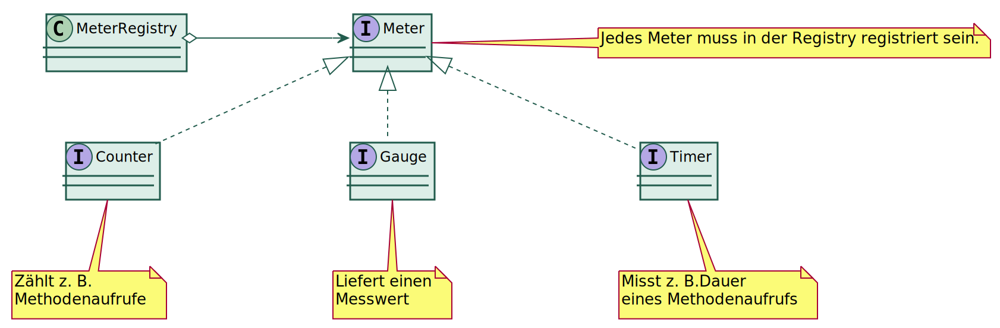
Beispiel für eigenen Messwert
@Component
public class SampleCounter implements InitializingBean {
@Autowired
private MeterRegistry registry;
private Counter counter;
@Override
public void afterPropertiesSet() throws Exception {
counter = Counter.builder("sample.tick.counter")
.description("Zählt die Aufrufe der tick-Methode")
.tags("app", "statistics")
.register(registry);
}
public void count() {
counter.increment();
}
}Verwendung:
@Autowired
private SampleCounter sampleCounter;
@Scheduled(fixedRate = 1000L)
void tick() throws InterruptedException {
sampleCounter.count();
sampleService.sinusDelay();
}Messwerte in Spring-Anwendungen
Micrometer-Annotationen für Methoden:
@CountederfordertCountedAspectBean@TimederfordertTimedAspectBean
Notwendige Konfiguration für
@Timed Annotation:@Bean
TimedAspect timedAspect(MeterRegistry registry) {
return new TimedAspect();
}Beispiel:
@Timed(value = "sample.sinus.timer",
description = "Timer, der eine Sinuskurve produziert",
extraTags = {"app", "statistics"})
public void sinusDelay() throws InterruptedException {
double x = System.nanoTime() * Math.PI / 60e9;
long y = 250L - (long) (100 * Math.sin(x));
log.debug("delaying {} ms", y);
TimeUnit.MILLISECONDS.sleep(y);
}Die Annotationen @Counted und @Timed wirken nur auf nicht private Methoden von Beans. |
Eingebaute Spring-Batch Metriken
| Metrik-Name | Typ | Beschreibung |
|---|---|---|
spring.batch.job | TIMER | Dauer der Job-Ausführung |
spring.batch.job.active | LONG_TASK_TIMER | Gerade aktive Jobs |
spring.batch.step | TIMER | Dauer der Step-Ausführung |
spring.batch.item.read | TIMER | Dauer des Lesens |
spring.batch.item.process | TIMER | Dauer der Verarbeitung |
spring.batch.chunk.write | TIMER | Dauer des Schreibens von Chunks |
Prometheus
Open-Source Zeitreihendatenbank von Google
Installation:
ZIP-Datei von https://prometheus.io/download/ herunterladen und entpacken.
Ausführung:
cd <Installationsverzeichnis> prometheus.exe --config.file=<Pfad>\prometheus.yml
Aufruf: http://localhost:9090
Grafana
Webbasierte Visualisierungsplattfrom für Monitoring-Daten, Open-Source
Installation (Standalone Windows Binaries):
ZIP-Datei von https://grafana.com/grafana/download herunterladen
Eigenschaften der ZIP-Datei ändern:
ZIP-Datei entpacken
Ausführung:
cd <Installationsverzeichnis>\bin grafana-server.exe
siehe auch Windows installation guide
Aufruf: http://localhost:3000 Login: admin/admin
Spring Boot Actuator
Stellt Monitoring-Daten aus Spring-Boot Anwendungen per JMX oder REST zur Verfügung
pom.xml
<dependency>
<groupId>org.springframework.boot</groupId>
<artifactId>spring-boot-starter-actuator</artifactId>
</dependency>application.properties
# Expose all actuator endpoints (niemals in der Produktion!)
management.endpoints.web.exposure.include=*Aufruf: http://localhost:8080/actuator
Konfiguration von Micrometer für Prometheus
pom.xml
<dependency>
<groupId>io.micrometer</groupId>
<artifactId>micrometer-registry-prometheus</artifactId>
<scope>runtime</scope>
</dependency>application.properties
management.endpoint.metrics.enabled=true
management.endpoint.prometheus.enabled=true
management.metrics.export.prometheus.enabled=trueAbfrage mit Prometheus

Prometheus aus Datenquelle in Grafana einbinden

Prometheus aus Datenquelle in Grafana einbinden
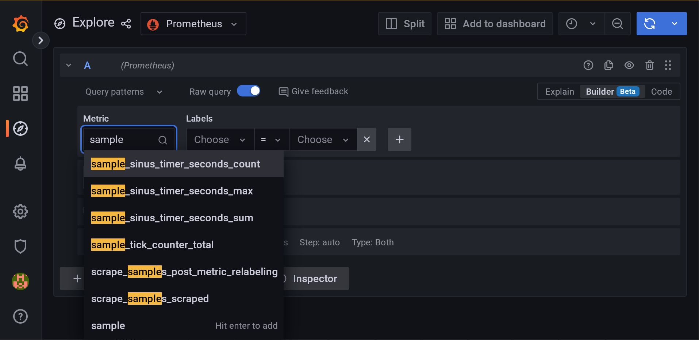
Grafana Dashboard
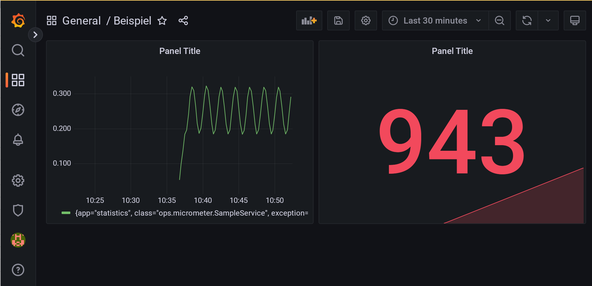
Zusammenfassung Lektion 8
Batchjobs mit Quartz oder TaskScheduler anstoßen
Batch mit Spring-Integration einbinden und über eine Message anstoßen
Batchverarbeitung in der Cloud, insbes.
DeployerPartitionHandlerMonitoring mit Micrometer
Aufgaben
Machen Sie sich mit der Beispielanwendung vertraut. Welche Actuator-Endpoints gibt es?
Ändern Sie die Ausführungshäufigkeit der beiden Hello-Jobs.
Bringen Sie den FilePollerJob zur Ausführung, indem Sie eine entsprechende Datei anlegen.
Sehen Sie sich die Stacktraces bei der Ausführung der obigen Jobs und den Inhalt des Repositories an.
Erstellen Sie mit Spring Initializr einen Cloud-Task, der den Hello-World Job ausführt
Verwenden Sie Prometheus + Grafana zum Anzeigen der Metriken zum Step-Counter und Sinus-Timer
→ Agenda